21. Funzioni Internet
Vedremo ora le funzioni Internet di Python, che ci consentono di eseguire la programmazione TCP/IP (Transmission Control Protocol/Internet Protocol).

21.1. Nozioni di base sulla programmazione Internet
21.1.1. Panoramica generale
Consideriamo la comunicazione tra due macchine remote, A e B:
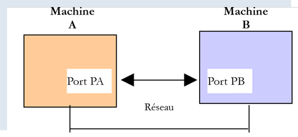
Quando un'applicazione AppA sul computer A desidera comunicare con un'applicazione AppB sul computer B tramite Internet, deve conoscere diversi elementi:
- l'indirizzo IP (Internet Protocol) o il nome del computer B;
- il numero di porta utilizzato dall'applicazione AppB. Infatti, il computer B può ospitare numerose applicazioni in esecuzione su Internet. Quando riceve informazioni dalla rete, deve sapere a quale applicazione sono destinate tali informazioni. Le applicazioni sul computer B accedono alla rete tramite interfacce note anche come porte di comunicazione. Queste informazioni sono contenute nel pacchetto ricevuto dal computer B in modo che possa essere consegnato all'applicazione corretta;
- i protocolli di comunicazione compresi dalla macchina B. Nel nostro studio, useremo solo i protocolli TCP-IP;
- il protocollo di comunicazione supportato dall'applicazione AppB. Infatti, le macchine A e B "comunicheranno" tra loro. Ciò che si scambieranno sarà incapsulato all'interno dei protocolli TCP/IP. Tuttavia, quando, alla fine della catena, l'applicazione AppB riceve le informazioni inviate dall'applicazione AppA, deve essere in grado di interpretarle. Ciò è analogo alla situazione in cui due persone, A e B, comunicano per telefono: la loro conversazione è veicolata dal telefono. Il parlato viene codificato come segnali dal telefono A, trasmesso sulle linee telefoniche e arriva al telefono B per essere decodificato. La persona B sente quindi le parole. È qui che entra in gioco il concetto di protocollo di comunicazione : se A parla francese e B non capisce quella lingua, A e B non saranno in grado di comunicare efficacemente;
Pertanto, le due applicazioni che comunicano devono concordare il tipo di comunicazione che useranno. Ad esempio, la comunicazione con un servizio FTP non è la stessa di quella con un servizio POP: questi due servizi non accettano gli stessi comandi. Hanno un protocollo di comunicazione diverso;
21.1.2. Caratteristiche del protocollo TCP
Qui esamineremo solo le comunicazioni di rete che utilizzano il protocollo di trasporto TCP, le cui caratteristiche principali sono le seguenti:
- Il processo che desidera trasmettere dati stabilisce innanzitutto una connessione con il processo che riceverà le informazioni che sta per trasmettere. Questa connessione viene stabilita tra una porta sulla macchina mittente e una porta sulla macchina ricevente. Viene così creato un percorso virtuale tra le due porte, che sarà riservato esclusivamente ai due processi che hanno stabilito la connessione;
- tutti i pacchetti inviati dal processo di origine seguono questo percorso virtuale e arrivano nell'ordine in cui sono stati inviati;
- le informazioni trasmesse appaiono continue. Il processo mittente invia le informazioni al proprio ritmo. Queste informazioni non vengono necessariamente inviate immediatamente: il protocollo TCP attende di averne a sufficienza da inviare. Esse vengono memorizzate in una struttura chiamata segmento TCP. Una volta che questo segmento è pieno, viene trasmesso al livello IP, dove viene incapsulato in un pacchetto IP;
- Ogni segmento inviato dal protocollo TCP è numerato. Il protocollo TCP ricevente verifica di ricevere i segmenti in sequenza. Per ogni segmento ricevuto correttamente, invia un riconoscimento al mittente;
- quando il mittente riceve questo riconoscimento, ne informa il processo di invio. Il processo di invio può così confermare che un segmento è arrivato a destinazione;
- Se, dopo un certo periodo di tempo, il protocollo TCP che ha inviato un segmento non riceve un riconoscimento, ritrasmette il segmento in questione, garantendo così la qualità del servizio di consegna delle informazioni;
- Il circuito virtuale stabilito tra i due processi in comunicazione è full-duplex: ciò significa che le informazioni possono fluire in entrambe le direzioni. Pertanto, il processo di destinazione può inviare conferme anche mentre il processo di origine continua a inviare informazioni. Ciò consente, ad esempio, al protocollo TCP di origine di inviare più segmenti senza attendere una conferma. Se, dopo un certo periodo di tempo, si rende conto di non aver ricevuto un riconoscimento per un segmento specifico n. n, riprenderà l'invio dei segmenti da quel punto;
21.1.3. Il rapporto client-server
La comunicazione su Internet è spesso asimmetrica: la macchina A avvia una connessione per richiedere un servizio alla macchina B, specificando che desidera stabilire una connessione con il servizio SB1 sulla macchina B. La macchina B accetta o rifiuta. Se accetta, la macchina A può inviare le sue richieste al servizio SB1. Queste richieste devono essere conformi al protocollo di comunicazione compreso dal servizio SB1. Si instaura così un dialogo richiesta-risposta tra la macchina A, detta macchina client, e la macchina B, detta macchina server. Uno dei due partner chiuderà la connessione.
21.1.4. Architettura client
L'architettura di un programma di rete che richiede i servizi di un'applicazione server sarà la seguente:
21.1.5. Architettura del server
L'architettura di un programma che offre servizi sarà la seguente:
Il programma server gestisce la richiesta di connessione iniziale di un client in modo diverso rispetto alle successive richieste di servizio. Il programma non fornisce il servizio direttamente. Se lo facesse, non sarebbe più in ascolto delle richieste di connessione mentre il servizio è in corso e i client non verrebbero serviti. Procedendo in modo diverso: non appena una richiesta di connessione viene ricevuta sulla porta di ascolto e quindi accettata, il server crea un'attività responsabile di fornire il servizio richiesto dal client. Questo servizio viene fornito su un'altra porta del server denominata porta di servizio. Ciò consente di servire più client contemporaneamente.
Un'attività di servizio avrà la seguente struttura:
21.2. Scopri i protocolli di comunicazione di Internet
21.2.1. Introduzione
Quando un client si connette a un server, viene stabilito un dialogo tra i due. La natura di questo dialogo costituisce ciò che è noto come protocollo di comunicazione del server. Tra i protocolli Internet più comuni vi sono i seguenti:
- HTTP: HyperText Transfer Protocol — il protocollo per comunicare con un server web (server HTTP);
- SMTP: Simple Mail Transfer Protocol — il protocollo per comunicare con un server di invio e-mail (server SMTP);
- POP: Post Office Protocol — il protocollo per comunicare con un server di archiviazione della posta elettronica (server POP). Questo comporta il recupero delle e-mail ricevute, non l'invio delle stesse;
- IMAP: Internet Message Access Protocol — il protocollo utilizzato per comunicare con un server di archiviazione della posta elettronica (server IMAP). Questo protocollo ha gradualmente sostituito il vecchio protocollo POP;
- FTP: File Transfer Protocol — il protocollo per comunicare con un server di archiviazione file (server FTP);
Tutti questi protocolli sono basati su testo: il client e il server si scambiano righe di testo. Se disponi di un client in grado di:
- stabilire una connessione con un server TCP;
- visualizzare sulla console le righe di testo inviate dal server;
- inviare al server le righe di testo che un utente digiterebbe sulla tastiera;
quindi siamo in grado di comunicare con un server TCP utilizzando un protocollo basato su testo, a condizione di conoscere le regole di tale protocollo.
21.2.2. Utilità TCP

Nel codice associato a questo documento sono presenti due utilità di comunicazione TCP:
- [RawTcpClient] consente di connettersi alla porta P di un server S;
- [RawTcpServer] consente di creare un server che ascolta i client sulla porta P;
Si tratta di due programmi in C# di cui viene fornito il codice sorgente. È quindi possibile modificarli.
Il server TCP [RawTcpServer] viene chiamato utilizzando la sintassi [RawTcpServer porta] per creare un servizio TCP sulla porta [porta] della macchina locale (il computer su cui si sta lavorando):
- Il server può servire più client contemporaneamente;
- Il server esegue i comandi digitati dall'utente sulla tastiera. Questi sono i seguenti:
- list: elenca i client attualmente connessi al server. Questi vengono visualizzati nel formato [id=x-name=y]. Il campo [id] viene utilizzato per identificare i client;
- send x [testo]: invia il testo al client n. x (id=x). Le parentesi quadre [] non vengono inviate. Sono necessarie nel comando. Sono utilizzate per delimitare visivamente il testo inviato al client;
- close x: chiude la connessione con il client #x;
- quit: chiude tutte le connessioni e arresta il servizio;
- Le righe inviate dal client al server vengono visualizzate sulla console;
- Tutti gli scambi vengono registrati in un file di testo denominato [machine-port.txt], dove
- [machine] è il nome della macchina su cui è in esecuzione il codice;
- [port] è la porta di servizio che risponde alle richieste dei client;
Il client TCP [RawTcpClient] viene chiamato utilizzando la sintassi [RawTcpClient server port] per connettersi alla porta [port] sul server [server]:
- Le righe digitate dall'utente sulla tastiera vengono inviate al server;
- le righe inviate dal server vengono visualizzate sulla console;
- Tutte le comunicazioni vengono registrate in un file di testo denominato [server-port.txt];
Vediamo un esempio. Apri due finestre del terminale PyCharm e vai alla cartella utilities in ciascuna di esse:

In una delle finestre, avvia il server [RawTcpServer] sulla porta 100:
(venv) C:\Data\st-2020\dev\python\cours-2020\python3-flask-2020\inet\utilitaires>RawTcpServer.exe 100
server : Serveur générique lancé sur le port 0.0.0.0:100
server : Attente d'un client...
server : Commandes disponibles : [list, send id [texte], close id, quit]
user :
- Riga 1: Ci troviamo nella cartella utilities;
- riga 1: Avviamo il server TCP sulla porta 100;
- righe 2–4: Il server attende un client TCP e visualizza un elenco di comandi che l'utente può digitare dalla tastiera;
- riga 5: il server attende un comando immesso dall'utente tramite la tastiera;
Nell'altra finestra di comando, avviamo il client TCP:
(venv) C:\Data\st-2020\dev\python\cours-2020\python3-flask-2020\inet\utilitaires>RawTcpClient.exe localhost 100
Client [DESKTOP-30FF5FB:51173] connecté au serveur [localhost-100]
Tapez vos commandes (quit pour arrêter) :
- Riga 1: ci troviamo nella cartella delle utilità;
- riga 1: avviamo il client TCP; gli diciamo di connettersi alla porta 100 sulla macchina locale (quella su cui è in esecuzione il codice [RawTcpClient]);
- riga 2, il client si è connesso con successo al server. Specifichiamo i dettagli del client: si trova sulla macchina [DESKTOP-30FF5FB] (la macchina locale in questo esempio) e utilizza la porta [51173] per comunicare con il server:
- Riga 3: il client è in attesa di un comando immesso dall'utente tramite la tastiera;
Torniamo alla finestra del server. Il suo contenuto è cambiato:
(venv) C:\Data\st-2020\dev\python\cours-2020\python3-flask-2020\inet\utilitaires>RawTcpServer.exe 100
server : Serveur générique lancé sur le port 0.0.0.0:100
server : Attente d'un client...
server : Commandes disponibles : [list, send id [texte], close id, quit]
user : server : Client 1-DESKTOP-30FF5FB-51173 connecté...
server : Attente d'un client...
- Riga 5: È stato rilevato un client. Il server gli ha assegnato l'ID 1. Il server ha identificato correttamente il client remoto (macchina e porta);
- Riga 6: Il server torna in attesa di un nuovo client;
Torniamo alla finestra del client e inviamo un comando al server:
(venv) C:\Data\st-2020\dev\python\cours-2020\python3-flask-2020\inet\utilitaires>RawTcpClient.exe localhost 100
Client [DESKTOP-30FF5FB:51173] connecté au serveur [localhost-100]
Tapez vos commandes (quit pour arrêter) :
hello from client
- riga 4, il comando inviato al server;
Torniamo alla finestra del server. Il suo contenuto è cambiato:
(venv) C:\Data\st-2020\dev\python\cours-2020\python3-flask-2020\inet\utilitaires>RawTcpServer.exe 100
server : Serveur générique lancé sur le port 0.0.0.0:100
server : Attente d'un client...
server : Commandes disponibles : [list, send id [texte], close id, quit]
user : server : Client 1-DESKTOP-30FF5FB-51173 connecté...
server : Attente d'un client...
client 1 : [hello from client]
- Riga 7, tra parentesi quadre, il messaggio ricevuto dal server;
Inviamo una risposta al cliente:
(venv) C:\Data\st-2020\dev\python\cours-2020\python3-flask-2020\inet\utilitaires>RawTcpServer.exe 100
server : Serveur générique lancé sur le port 0.0.0.0:100
server : Attente d'un client...
server : Commandes disponibles : [list, send id [texte], close id, quit]
user : server : Client 1-DESKTOP-30FF5FB-51173 connecté...
server : Attente d'un client...
client 1 : [hello from client]
send 1 [hello from server]
user :
- Riga 8, la risposta inviata al cliente 1. Viene inviato solo il testo tra le parentesi, non le parentesi stesse;
Torniamo alla finestra del client:
(venv) C:\Data\st-2020\dev\python\cours-2020\python3-flask-2020\inet\utilitaires>RawTcpClient.exe localhost 100
Client [DESKTOP-30FF5FB:51173] connecté au serveur [localhost-100]
Tapez vos commandes (quit pour arrêter) :
hello from client
<-- [hello from server]
- Riga 5, la risposta ricevuta dal client. Il testo ricevuto è quello tra parentesi quadre;
Torniamo alla finestra del server per vedere altri comandi:
(venv) C:\Data\st-2020\dev\python\cours-2020\python3-flask-2020\inet\utilitaires>RawTcpServer.exe 100
server : Serveur générique lancé sur le port 0.0.0.0:100
server : Attente d'un client...
server : Commandes disponibles : [list, send id [texte], close id, quit]
user : server : Client 1-DESKTOP-30FF5FB-51173 connecté...
server : Attente d'un client...
client 1 : [hello from client]
send 1 [hello from server]
user : list
server : id=1-name=DESKTOP-30FF5FB-51173
user : close 1
server : Connexion client 1 fermée...
user : quit
server : fin du service
- Riga 9, richiediamo l'elenco dei client;
- alla riga 10, la risposta;
- riga 11, chiudiamo la connessione con il cliente n. 1;
- riga 12, la conferma del server;
- riga 13, spegniamo il server;
- riga 14, la conferma del server;
Torniamo alla finestra del client:
(venv) C:\Data\st-2020\dev\python\cours-2020\python3-flask-2020\inet\utilitaires>RawTcpClient.exe localhost 100
Client [DESKTOP-30FF5FB:51173] connecté au serveur [localhost-100]
Tapez vos commandes (quit pour arrêter) :
hello from client
<-- [hello from server]
Perte de la connexion avec le serveur...
- riga 6, il client ha rilevato la fine del servizio;
Sono stati creati due file di log, uno per il server e uno per il client:

- in [1], i log del server: il nome del file è il nome del client nel formato [macchina-porta]. Ciò consente di avere file di log diversi per client diversi;
- In [2], il client registra: il nome del file corrisponde al nome del server nel formato [macchina-porta];
I log del server sono i seguenti:
<-- [hello from client]
--> [hello from server]
I log del client sono i seguenti:
--> [hello from client]
<-- [hello from server]
21.3. Ottenere il nome o l'indirizzo IP di un computer su Internet

I computer su Internet sono identificati da un indirizzo IP (IPv4 o IPv6) e, il più delle volte, da un nome. Tuttavia, in definitiva, solo l'indirizzo IP viene utilizzato dai protocolli di comunicazione Internet. Pertanto, è necessario conoscere l'indirizzo IP di un computer identificato dal suo nome.
Lo script [ip-01.py] è il seguente:
Commenti
- riga 2: il modulo [socket] fornisce le funzioni necessarie per gestire i socket Internet. [socket] si riferisce a una presa elettrica o a una porta di rete;
- riga 6: la funzione [get_ip_and_name] consente di ottenere quanto segue dal nome host di una macchina:
- l'indirizzo IP della macchina;
- il nome della macchina derivato dall'indirizzo IP precedente;
- riga 10: la funzione [socket.gethostbyname] recupera l'indirizzo IP di una macchina da uno dei suoi nomi (una macchina Internet può avere un nome principale e degli alias);
- riga 12: le funzioni socket generano l'eccezione [socket.error] non appena si verifica un errore;
- riga 19: la funzione [socket.gethostbyaddr] recupera il nome di una macchina dal suo indirizzo IP. Vedremo che possiamo ottenere un nome diverso da quello passato nella riga 6;
- riga 30: un elenco di nomi di macchine. L'ultimo nome è errato. Il nome [localhost] si riferisce alla macchina su cui stai lavorando e su cui è in esecuzione lo script;
- righe 33–35: visualizziamo gli indirizzi IP di queste macchine;
Risultati:
C:\Data\st-2020\dev\python\cours-2020\python3-flask-2020\venv\Scripts\python.exe C:/Data/st-2020/dev/python/cours-2020/python3-flask-2020/inet/ip/ip_01.py
-------------------------------------
ip[istia.univ-angers.fr]=193.49.144.41
names[193.49.144.41]=('ametys-fo-2.univ-angers.fr', [], ['193.49.144.41'])
-------------------------------------
ip[www.univ-angers.fr]=193.49.144.41
names[193.49.144.41]=('ametys-fo-2.univ-angers.fr', [], ['193.49.144.41'])
-------------------------------------
ip[sergetahe.com]=87.98.154.146
names[87.98.154.146]=('cluster026.hosting.ovh.net', [], ['87.98.154.146'])
-------------------------------------
ip[localhost]=127.0.0.1
names[127.0.0.1]=('DESKTOP-30FF5FB', [], ['127.0.0.1'])
-------------------------------------
ip[xx]=[Errno 11001] getaddrinfo failed
Terminé...
Process finished with exit code 0
21.4. L'HTTP (HyperText Transfer Protocol)
21.4.1. Esempio 1
Quando un browser visualizza un URL, agisce come client di un server web, o in altre parole, di un server HTTP. Prende l'iniziativa e inizia inviando una serie di comandi al server. Per questo primo esempio:
- il server sarà l'utilità [RawTcpServer];
- il client sarà un browser;
Per prima cosa, avviamo il server sulla porta 100:
(venv) C:\Data\st-2020\dev\python\cours-2020\python3-flask-2020\inet\utilitaires>RawTcpServer.exe 100
server : Serveur générique lancé sur le port 0.0.0.0:100
server : Attente d'un client...
server : Commandes disponibles : [list, send id [texte], close id, quit]
user :
Quindi, utilizzando un browser, richiediamo l'URL [http://localhost:100], specificando che il server HTTP interrogato è in esecuzione sulla porta 100 della macchina locale:

Torniamo alla finestra del server:
(venv) C:\Data\st-2020\dev\python\cours-2020\python3-flask-2020\inet\utilitaires>RawTcpServer.exe 100
server : Serveur générique lancé sur le port 0.0.0.0:100
server : Attente d'un client...
server : Commandes disponibles : [list, send id [texte], close id, quit]
user : server : Client 1-DESKTOP-30FF5FB-51438 connecté...
server : Attente d'un client...
server : Client 2-DESKTOP-30FF5FB-51439 connecté...
server : Attente d'un client...
client 1 : [GET / HTTP/1.1]
client 1 : [Host: localhost:100]
client 1 : [Connection: keep-alive]
client 1 : [DNT: 1]
client 1 : [Upgrade-Insecure-Requests: 1]
client 1 : [User-Agent: Mozilla/5.0 (Windows NT 10.0; Win64; x64) AppleWebKit/537.36 (KHTML, like Gecko) Chrome/83.0.4103.116 Safari/537.36]
client 1 : [Accept: text/html,application/xhtml+xml,application/xml;q=0.9,image/webp,image/apng,*/*;q=0.8,application/signed-exchange;v=b3;q=0.9]
client 1 : [Sec-Fetch-Site: none]
client 1 : [Sec-Fetch-Mode: navigate]
client 1 : [Sec-Fetch-User: ?1]
client 1 : [Sec-Fetch-Dest: document]
client 1 : [Accept-Encoding: gzip, deflate, br]
client 1 : [Accept-Language: fr-FR,fr;q=0.9,en-US;q=0.8,en;q=0.7]
client 1 : []
server : Client 3-DESKTOP-30FF5FB-51441 connecté...
server : Attente d'un client...
- riga 5, il client che si è connesso;
- righe 9–22: la serie di righe di testo che ha inviato:
- riga 9: questa riga ha il formato [GET URL HTTP/1.1]. Richiede l'URL / e indica al server di utilizzare il protocollo HTTP 1.1;
- riga 10: questa riga ha il formato [Host: server:port]. Il comando [Host] non fa distinzione tra maiuscole e minuscole. Si noti che il client sta interrogando un server locale che opera sulla porta 100;
- riga 14: il comando [User-Agent] identifica il client;
- riga 15: il comando [Accept] specifica quali tipi di documenti sono accettati dal client;
- Riga 21: la direttiva [Accept-Language] specifica la lingua in cui devono essere forniti i documenti richiesti se sono disponibili in più lingue;
- Riga 11: la direttiva [Connection] specifica la modalità di connessione desiderata: [keep-alive] indica che la connessione deve essere mantenuta fino al completamento dello scambio;
- riga 22: il client termina i propri comandi con una riga vuota;
Terminiamo la connessione spegnendo il server:
client 1 : []
server : Client 3-DESKTOP-30FF5FB-51441 connecté...
server : Attente d'un client...
quit
server : fin du service
21.4.2. Esempio 2
Ora che conosciamo i comandi inviati da un browser per richiedere un URL, richiederemo questo URL utilizzando il nostro client TCP [RawTcpClient]. Il server Apache in Laragon (sezione |Installazione di Laragon|) sarà il nostro server web.
Avviamo Laragon e poi il server web Apache:


Ora, utilizzando un browser, richiediamo l'URL [http://localhost:80]. Qui specifichiamo solo il server [localhost:80] e nessun URL del documento. In questo caso, viene richiesto l'URL /, ovvero la radice del server web:

- in [1], l'URL richiesto. Inizialmente abbiamo digitato [http://localhost:80] e il browser (qui Firefox) lo ha semplicemente convertito in [localhost] perché il protocollo [http] è implicito quando non viene specificato alcun protocollo, e la porta [80] è implicita quando la porta non è specificata;
- in [2], la pagina radice / del server web interrogato;
Ora, visualizziamo il testo ricevuto dal browser:

- fare clic con il tasto destro sulla pagina ricevuta e selezionare l'opzione [2]. Si otterrà il seguente codice sorgente:
<!DOCTYPE html>
<html>
<head>
<title>Laragon</title>
<link href="https://fonts.googleapis.com/css?family=Karla:400" rel="stylesheet" type="text/css">
<style>
html, body {
height: 100%;
}
body {
margin: 0;
padding: 0;
width: 100%;
display: table;
font-weight: 100;
font-family: 'Karla';
}
.container {
text-align: center;
display: table-cell;
vertical-align: middle;
}
.content {
text-align: center;
display: inline-block;
}
.title {
font-size: 96px;
}
.opt {
margin-top: 30px;
}
.opt a {
text-decoration: none;
font-size: 150%;
}
a:hover {
color: red;
}
</style>
</head>
<body>
<div class="container">
<div class="content">
<div class="title" title="Laragon">Laragon</div>
<div class="info">
<br />
Apache/2.4.35 (Win64) OpenSSL/1.1.1b PHP/7.2.19<br />
PHP version: 7.2.19 <span><a title="phpinfo()" href="/?q=info">info</a></span><br />
Document Root: C:/MyPrograms/laragon/www<br />
</div>
<div class="opt">
<div><a title="Getting Started" href="https://laragon.org/docs">Getting Started</a></div>
</div>
</div>
</div>
</body>
</html>
Ora richiediamo l'URL [http://localhost:80] utilizzando il nostro client TCP:
(venv) C:\Data\st-2020\dev\python\cours-2020\python3-flask-2020\inet\utilitaires>RawTcpClient.exe localhost 80
Client [DESKTOP-30FF5FB:51541] connecté au serveur [localhost-80]
Tapez vos commandes (quit pour arrêter) :
- Riga 1: Ci connettiamo alla porta 80 sul server localhost. È qui che gira il server web Laragon;
Ora digitiamo i comandi che abbiamo visto nel paragrafo precedente:
(venv) C:\Data\st-2020\dev\python\cours-2020\python3-flask-2020\inet\utilitaires>RawTcpClient.exe localhost 80
Client [DESKTOP-30FF5FB:51544] connecté au serveur [localhost-80]
Tapez vos commandes (quit pour arrêter) :
GET / HTTP/1.1
Host: localhost:80
<-- [HTTP/1.1 200 OK]
<-- [Date: Sun, 05 Jul 2020 12:42:14 GMT]
<-- [Server: Apache/2.4.35 (Win64) OpenSSL/1.1.1b PHP/7.2.19]
<-- [X-Powered-By: PHP/7.2.19]
<-- [Content-Length: 1776]
<-- [Content-Type: text/html; charset=UTF-8]
<-- []
<-- [<!DOCTYPE html>]
<-- [<html>]
<-- [ <head>]
<-- [ <title>Laragon</title>]
<-- []
<-- [ <link href="https://fonts.googleapis.com/css?family=Karla:400" rel="stylesheet" type="text/css">]
<-- []
<-- [ <style>]
<-- [ html, body {]
<-- [ height: 100%;]
<-- [ }]
<-- []
<-- [ body {]
<-- [ margin: 0;]
<-- [ padding: 0;]
<-- [ width: 100%;]
<-- [ display: table;]
<-- [ font-weight: 100;]
<-- [ font-family: 'Karla';]
<-- [ }]
<-- []
<-- [ .container {]
<-- [ text-align: center;]
<-- [ display: table-cell;]
<-- [ vertical-align: middle;]
<-- [ }]
<-- []
<-- [ .content {]
<-- [ text-align: center;]
<-- [ display: inline-block;]
<-- [ }]
<-- []
<-- [ .title {]
<-- [ font-size: 96px;]
<-- [ }]
<-- []
<-- [ .opt {]
<-- [ margin-top: 30px;]
<-- [ }]
<-- []
<-- [ .opt a {]
<-- [ text-decoration: none;]
<-- [ font-size: 150%;]
<-- [ }]
<-- [ ]
<-- [ a:hover {]
<-- [ color: red;]
<-- [ }]
<-- [ </style>]
<-- [ </head>]
<-- [ <body>]
<-- [ <div class="container">]
<-- [ <div class="content">]
<-- [ <div class="title" title="Laragon">Laragon</div>]
<-- [ ]
<-- [ <div class="info"><br />]
<-- [ Apache/2.4.35 (Win64) OpenSSL/1.1.1b PHP/7.2.19<br />]
<-- [ PHP version: 7.2.19 <span><a title="phpinfo()" href="/?q=info">info</a></span><br />]
<-- [ Document Root: C:/MyPrograms/laragon/www<br />]
<-- []
<-- [ </div>]
<-- [ <div class="opt">]
<-- [ <div><a title="Getting Started" href="https://laragon.org/docs">Getting Started</a></div>]
<-- [ </div>]
<-- [ </div>]
<-- []
<-- [ </div>]
<-- [ </body>]
<-- [</html>]
Perte de la connexion avec le serveur...
- Riga 4, il comando [GET]. Richiediamo la directory principale / del server web;
- riga 5, il comando [Host];
- questi sono gli unici due comandi essenziali. Per gli altri comandi, il server web utilizzerà i valori predefiniti;
- riga 6, la riga vuota che deve concludere i comandi del client;
- sotto la riga 6 c'è la risposta del server web;
- righe 7–12: le intestazioni HTTP della risposta del server;
- riga 13: la riga vuota che segnala la fine delle intestazioni HTTP;
- Righe 14–82: il documento HTML richiesto alla riga 4;
Carichiamo il file di log [localhost-80.txt]:

--> [GET / HTTP/1.1]
--> [Host: localhost:80]
--> []
<-- [HTTP/1.1 200 OK]
<-- [Date: Sun, 05 Jul 2020 12:42:14 GMT]
<-- [Server: Apache/2.4.35 (Win64) OpenSSL/1.1.1b PHP/7.2.19]
<-- [X-Powered-By: PHP/7.2.19]
<-- [Content-Length: 1776]
<-- [Content-Type: text/html; charset=UTF-8]
<-- []
<-- [<!DOCTYPE html>]
<-- [<html>]
<-- [ <head>]
<-- [ <title>Laragon</title>]
<-- []
<-- [ <link href="https://fonts.googleapis.com/css?family=Karla:400" rel="stylesheet" type="text/css">]
<-- []
<-- [ <style>]
<-- [ html, body {]
<-- [ height: 100%;]
<-- [ }]
<-- []
<-- [ body {]
<-- [ margin: 0;]
<-- [ padding: 0;]
<-- [ width: 100%;]
<-- [ display: table;]
<-- [ font-weight: 100;]
<-- [ font-family: 'Karla';]
<-- [ }]
<-- []
<-- [ .container {]
<-- [ text-align: center;]
<-- [ display: table-cell;]
<-- [ vertical-align: middle;]
<-- [ }]
<-- []
<-- [ .content {]
<-- [ text-align: center;]
<-- [ display: inline-block;]
<-- [ }]
<-- []
<-- [ .title {]
<-- [ font-size: 96px;]
<-- [ }]
<-- []
<-- [ .opt {]
<-- [ margin-top: 30px;]
<-- [ }]
<-- []
<-- [ .opt a {]
<-- [ text-decoration: none;]
<-- [ font-size: 150%;]
<-- [ }]
<-- [ ]
<-- [ a:hover {]
<-- [ color: red;]
<-- [ }]
<-- [ </style>]
<-- [ </head>]
<-- [ <body>]
<-- [ <div class="container">]
<-- [ <div class="content">]
<-- [ <div class="title" title="Laragon">Laragon</div>]
<-- [ ]
<-- [ <div class="info"><br />]
<-- [ Apache/2.4.35 (Win64) OpenSSL/1.1.1b PHP/7.2.19<br />]
<-- [ PHP version: 7.2.19 <span><a title="phpinfo()" href="/?q=info">info</a></span><br />]
<-- [ Document Root: C:/MyPrograms/laragon/www<br />]
<-- []
<-- [ </div>]
<-- [ <div class="opt">]
<-- [ <div><a title="Getting Started" href="https://laragon.org/docs">Getting Started</a></div>]
<-- [ </div>]
<-- [ </div>]
<-- []
<-- [ </div>]
<-- [ </body>]
<-- [</html>]
- Righe 11–79: il documento HTML ricevuto. Nell'esempio precedente, Firefox ha ricevuto lo stesso documento;
Ora disponiamo delle nozioni di base per programmare un client TCP in grado di richiedere un URL.
21.4.3. Esempio 3

Lo script [http/01/main.py] è un client HTTP configurato dal file [config.py]. Il suo contenuto è il seguente:
- Il contenuto del file è un elenco di URL, dove ogni elemento dell'elenco è un dizionario. Questo dizionario specifica come connettersi al sito indicato dalla chiave [site];
- righe 4–10: il significato delle chiavi in ciascun dizionario;
Lo script [http/01/main.py] è il seguente:
1 2 3 4 5 6 7 8 9 10 11 12 13 14 15 16 17 18 19 20 21 22 23 24 25 26 27 28 29 30 31 32 33 34 35 36 37 38 39 40 41 42 43 44 45 46 47 48 49 50 51 52 53 54 55 56 57 58 59 60 61 62 63 64 65 66 67 68 69 70 71 72 73 74 75 76 77 78 79 80 81 82 83 84 85 86 87 88 89 90 91 92 93 94 95 96 97 98 99 100 101 102 103 104 105 106 107 108 109 110 111 112 113 114 115 116 117 118 119 120 121 122 123 124 | |
Commenti sul codice:
- righe 108-109: viene recuperato il dizionario [config] dal modulo [config.py];
- righe 111-122: viene utilizzato questo dizionario;
- righe 118, 7: la funzione [get_url(url)] richiede un documento dal sito web url[site] e lo memorizza nel file di testo url[site].HTML. Per impostazione predefinita, gli scambi client/server vengono registrati nella console (tracking=True);
- Tutto viene eseguito all'interno di un blocco [try / finally] (righe 14–96). Non è presente alcuna clausola [except]. Le eccezioni vengono propagate al codice chiamante, che le intercetta e le visualizza (righe 119–120);
- Righe 16–17: Apertura di una connessione al server web. La funzione [socket.create_connection] accetta tre parametri:
- [param1]: è il nome del computer Internet che si desidera raggiungere;
- [param2]: è il numero di porta del servizio a cui ci si vuole connettere;
- [param3]: [socket.create_connection] restituisce un socket e [param3], se presente, specifica il timeout per il socket creato. Il timeout è il periodo massimo di attesa per il socket mentre attende una risposta dalla macchina remota;
- righe 27-28: creazione del file [site.html] in cui verrà memorizzato il documento HTML ricevuto;
- righe 34-43: il primo comando del client deve essere il comando [GET URL HTTP/1.1];
- riga 43: la funzione [sock.send] consente al client di inviare dati al server. In questo caso, la stringa di testo inviata ha il seguente significato: "Desidero (GET) la pagina [URL] dal sito web a cui sono connesso. Sto utilizzando HTTP versione 1.1";
- Riga 43: L'istruzione [sock.send(bytearray(command, 'utf-8'))] invia un array di byte. Questo array si ottiene convertendo la stringa [command] in una sequenza di byte codificati in UTF-8;
- righe 44–52: vengono inviate le altre righe del protocollo HTTP [Host, User-Agent, Accept, Accept-Language…]. Il loro ordine non ha importanza;
- righe 53–55: viene inviata l'intestazione HTTP [Connection: close] per indicare al server di chiudere la connessione una volta inviato il documento richiesto. Per impostazione predefinita, il server non lo fa. Pertanto, deve essere richiesto esplicitamente. Il vantaggio è che questa chiusura verrà rilevata sul lato client, ed è così che il client saprà di aver ricevuto l'intero documento richiesto;
- righe 56–57: viene inviata una riga vuota al server per indicare che il client ha terminato l'invio delle proprie intestazioni HTTP e sta ora aspettando il documento richiesto;
- righe 68–86: il server invierà prima una serie di intestazioni HTTP che forniscono vari dettagli sul documento richiesto. Queste intestazioni terminano con una riga vuota;
- righe 69–73: per leggere la risposta del server riga per riga, utilizziamo il metodo [sock.makefile(encoding=encoding)]. Il parametro opzionale [encoding] specifica la codifica del testo prevista. Dopo questa operazione, il flusso di righe inviate dal server può essere letto come un file di testo standard;
- riga 78: leggiamo una riga inviata dal server utilizzando il metodo [readline]. Eliminiamo gli spazi bianchi iniziali e finali (spazi, caratteri di nuova riga);
- righe 81–83: se la riga non è vuota ed è stato richiesto il tracciamento, la riga ricevuta viene visualizzata sulla console;
- righe 84–86: se è stata recuperata la riga vuota che segna la fine delle intestazioni HTTP inviate dal server, il ciclo alla riga 76 viene terminato;
- righe 90-95: le righe di testo della risposta del server possono essere lette riga per riga utilizzando un ciclo while e salvate nel file di testo [html]. Quando il server web ha inviato l'intera pagina richiesta, chiude la sua connessione con il client. Sul lato client, questo verrà rilevato come fine del file, e usciremo dal ciclo nelle righe 90–95;
- Righe 96–102: indipendentemente dal verificarsi o meno di un errore, tutte le risorse utilizzate dal codice vengono rilasciate;
Risultati:
La console visualizza i seguenti log:
C:\Data\st-2020\dev\python\cours-2020\python3-flask-2020\venv\Scripts\python.exe C:/Data/st-2020/dev/python/cours-2020/python3-flask-2020/inet/http/01/main.py
-------------------------
localhost
-------------------------
Client : début de la communication avec le serveur [localhost]
--> GET / HTTP/1.1
--> Host: localhost:80
--> User-Agent: client Python
--> Accept: text/HTML
--> Accept-Language: fr
Réponse du serveur [localhost]
<-- HTTP/1.1 200 OK
<-- Date: Sun, 05 Jul 2020 16:27:46 GMT
<-- Server: Apache/2.4.35 (Win64) OpenSSL/1.1.1b PHP/7.2.19
<-- X-Powered-By: PHP/7.2.19
<-- Content-Length: 1776
<-- Connection: close
<-- Content-Type: text/html; charset=UTF-8
-------------------------
sergetahe.com
-------------------------
Client : début de la communication avec le serveur [sergetahe.com]
--> GET / HTTP/1.1
--> Host: sergetahe.com:80
--> User-Agent: client Python
--> Accept: text/HTML
--> Accept-Language: fr
Réponse du serveur [sergetahe.com]
<-- HTTP/1.1 302 Found
<-- Date: Sun, 05 Jul 2020 16:27:45 GMT
<-- Content-Type: text/html; charset=UTF-8
<-- Transfer-Encoding: chunked
<-- Connection: close
<-- Server: Apache
<-- X-Powered-By: PHP/7.3
<-- Location: http://sergetahe.com:80/cours-tutoriels-de-programmation
<-- Set-Cookie: SERVERID68971=2620178|XwH/h|XwH/h; path=/
<-- X-IPLB-Instance: 17106
-------------------------
tahe.developpez.com
-------------------------
Client : début de la communication avec le serveur [tahe.developpez.com]
--> GET / HTTP/1.1
--> Host: tahe.developpez.com:443
--> User-Agent: client Python
--> Accept: text/HTML
--> Accept-Language: fr
Réponse du serveur [tahe.developpez.com]
<-- HTTP/1.1 400 Bad Request
<-- Date: Sun, 05 Jul 2020 16:27:45 GMT
<-- Server: Apache/2.4.38 (Debian)
<-- Content-Length: 453
<-- Connection: close
<-- Content-Type: text/html; charset=iso-8859-1
-------------------------
www.sergetahe.com
-------------------------
Client : début de la communication avec le serveur [www.sergetahe.com]
--> GET /cours-tutoriels-de-programmation/ HTTP/1.1
--> Host: sergetahe.com:80
--> User-Agent: client Python
--> Accept: text/HTML
--> Accept-Language: fr
Réponse du serveur [www.sergetahe.com]
<-- HTTP/1.1 301 Moved Permanently
<-- Date: Sun, 05 Jul 2020 16:27:45 GMT
<-- Content-Type: text/html; charset=iso-8859-1
<-- Content-Length: 263
<-- Connection: close
<-- Server: Apache
<-- Location: https://sergetahe.com/cours-tutoriels-de-programmation/
<-- Set-Cookie: SERVERID68971=2620178|XwH/h|XwH/h; path=/
<-- X-IPLB-Instance: 17095
Terminé...
Process finished with exit code 0
Commenti
- riga 12: l'URL [http://localhost/] è stato trovato (codice 200);
- riga 29: l'URL [http://sergetahe.com/] non è stato trovato (codice 302). Il codice 302 indica che la pagina richiesta ha cambiato URL. Il nuovo URL è indicato dall'intestazione HTTP [Location] alla riga 36;
- riga 49: la richiesta inviata al server [http://tahe.developpez.com] non è valida (codice di stato 400);
- riga 65: l'URL [http://www.sergetahe.com/] non è stato trovato (codice 301). Il codice 301 significa che la pagina richiesta ha cambiato in modo permanente il proprio URL. Il nuovo URL è indicato dall'intestazione HTTP [Location] alla riga 71;
In generale, i codici 3xx, 4xx e 5xx provenienti da un server HTTP sono codici di errore.
L'esecuzione ha prodotto i seguenti file:

Il file ricevuto [output/localhost.HTML] è il seguente:
<!DOCTYPE html>
<html>
<head>
<title>Laragon</title>
<link href="https://fonts.googleapis.com/css?family=Karla:400" rel="stylesheet" type="text/css">
<style>
html, body {
height: 100%;
}
body {
margin: 0;
padding: 0;
width: 100%;
display: table;
font-weight: 100;
font-family: 'Karla';
}
.container {
text-align: center;
display: table-cell;
vertical-align: middle;
}
.content {
text-align: center;
display: inline-block;
}
.title {
font-size: 96px;
}
.opt {
margin-top: 30px;
}
.opt a {
text-decoration: none;
font-size: 150%;
}
a:hover {
color: red;
}
</style>
</head>
<body>
<div class="container">
<div class="content">
<div class="title" title="Laragon">Laragon</div>
<div class="info"><br />
Apache/2.4.35 (Win64) OpenSSL/1.1.1b PHP/7.2.19<br />
PHP version: 7.2.19 <span><a title="phpinfo()" href="/?q=info">info</a></span><br />
Document Root: C:/MyPrograms/laragon/www<br />
</div>
<div class="opt">
<div><a title="Getting Started" href="https://laragon.org/docs">Getting Started</a></div>
</div>
</div>
</div>
</body>
</html>
Abbiamo effettivamente ricevuto lo stesso documento che avevamo con il browser Firefox.
Il documento ricevuto [output/sergetahe_com.html] è il seguente:

La maggior parte dei server HTTP invia le proprie risposte alle richieste in blocchi. Ogni blocco inviato è preceduto da una riga che indica il numero di byte contenuti nel blocco successivo. Ciò consente al client di leggere esattamente quel numero di byte per ricevere il blocco. In questo caso, lo 0 indica che il blocco successivo contiene zero byte. Ricordiamo che il server aveva segnalato che il documento [http://sergetahe.com/] aveva cambiato il proprio URL. Pertanto, non ha inviato alcun documento.
Il documento [output/tahe_developpez_com.html] è il seguente:
<!DOCTYPE HTML PUBLIC "-//IETF//DTD HTML 2.0//EN">
<html><head>
<title>400 Bad Request</title>
</head><body>
<h1>Bad Request</h1>
<p>Your browser sent a request that this server could not understand.<br />
Reason: You're speaking plain HTTP to an SSL-enabled server port.<br />
Instead use the HTTPS scheme to access this URL, please.<br />
</p>
<hr>
<address>Apache/2.4.38 (Debian) Server at 2eurocents.developpez.com Port 80</address>
</body></html>
- Righe 1–12: Il server ha inviato un documento HTML nonostante la richiesta fosse errata (riga 49 dei risultati). Il documento HTML consente al server di specificare la causa dell'errore. Ciò è indicato alle righe 6 e 7:
- riga 7: il nostro client ha utilizzato il protocollo HTTP;
- riga 8: il server utilizza il protocollo HTTPS (S=secure) e non accetta il protocollo HTTP;
Il documento [output/www_sergetahe_com.html] è il seguente:
<!DOCTYPE HTML PUBLIC "-//IETF//DTD HTML 2.0//EN">
<html><head>
<title>301 Moved Permanently</title>
</head><body>
<h1>Moved Permanently</h1>
<p>The document has moved <a href="https://sergetahe.com/cours-tutoriels-de-programmation/">here</a>.</p>
</body></html>
Anche qui si è verificato un errore (riga 3). Tuttavia, il server si preoccupa di inviare un documento HTML che descrive l'errore (righe 1–7).
21.4.4. Esempio 4
Gli esempi precedenti ci hanno mostrato che il nostro client HTTP era insufficiente. Introdurremo ora uno strumento chiamato [curl] che ci permette di recuperare documenti web gestendo le sfide menzionate: protocollo HTTPS, documenti inviati in blocchi, reindirizzamenti… Lo strumento [curl] è stato installato con Laragon:

Apriamo un terminale PyCharm [1]:

- in [1], accesso ai terminali PyCharm;
- in [2-3], i terminali già attivi;
- in [4], la directory in cui ci si trova attualmente. Non importa quale si utilizzi;
Nel terminale, digita il seguente comando:
(venv) C:\Data\st-2020\dev\python\cours-2020\python3-flask-2020\inet\utilitaires>curl --help
Usage: curl [options...] <url>
--abstract-unix-socket <path> Connect via abstract Unix domain socket
--anyauth Pick any authentication method
-a, --append Append to target file when uploading
--basic Use HTTP Basic Authentication
--cacert <CA certificate> CA certificate to verify peer against
…
Il fatto che il comando [curl –help] abbia prodotto dei risultati dimostra che il comando [curl] si trova nel PATH del terminale. In Windows, il PATH è l'insieme delle cartelle in cui viene effettuata la ricerca quando l'utente digita un comando eseguibile, in questo caso [curl]. Il valore del PATH può essere determinato come segue:
(venv) C:\Data\st-2020\dev\python\cours-2020\python3-flask-2020\inet\utilitaires>echo %PATH%
C:\Data\st-2020\dev\python\cours-2020\python3-flask-2020\venv\Scripts;C:\Program Files (x86)\Common Files\Oracle\Java\javapath;C:\Program Files\Python38\Scripts\;C:\Program Files\Python38\;C:\windows\system32;C:\windows;C:\windows\System32\Wbem;C:\windows\System32\WindowsPowerShell\v1.0\;C:\windows\System32\OpenSSH\;C:\Program Files\Git\cmd;C:\Users\serge\AppData\Local\Microsoft\WindowsApps;;C:\Program Files\JetBrains\PyCharm Community Edition 2020.1.2\bin;
Riga 2: le cartelle PATH separate da punti e virgola. In questo elenco non compare nessuna cartella relativa a Laragon. Dopo un'ulteriore indagine, scopriamo che nella cartella [c:\windows\system32] è presente un [curl]. È proprio quello che ha risposto in precedenza.
Se si desidera utilizzare lo strumento [curl] incluso in Laragon, è possibile procedere come segue:


- in [2], il terminale Laragon;
- in [3], questo pulsante consente di creare nuovi terminali, ciascuno dei quali si aprirà in una scheda nella finestra sopra;
- in [4], impostiamo il PATH per il terminale di Laragon;
- si ottiene qualcosa di molto diverso da ciò che si otteneva in un terminale PyCharm. Questo PATH contiene molte cartelle create durante l’installazione di Laragon. La cartella contenente lo strumento [curl] è una di queste:

Successivamente, utilizza il terminale che preferisci. Tieni presente, però, che se desideri utilizzare uno strumento fornito da Laragon, il terminale di Laragon è l'opzione consigliata.
Il comando [curl --help] mostra tutte le opzioni di configurazione di [curl]. Ce ne sono decine. Ne useremo pochissime. Per richiedere un URL, digita semplicemente il comando [curl URL]. Questo comando visualizzerà il documento richiesto sulla console. Se vuoi anche vedere gli scambi HTTP tra il client e il server, digita [curl --verbose URL]. Infine, per salvare il documento HTML richiesto in un file, digita [curl --verbose --output nomefile URL].
Per evitare di ingombrare il file system del nostro computer, spostiamoci in una posizione diversa (qui sto usando un terminale Laragon):
λ cd \Temp\
C:\Temp
λ mkdir curl
C:\Temp
λ cd curl\
C:\Temp\curl
λ dir
Le volume dans le lecteur C s’appelle Local Disk
Le numéro de série du volume est B84C-D958
Répertoire de C:\Temp\curl
05/07/2020 19:31 <DIR> .
05/07/2020 19:31 <DIR> ..
0 fichier(s) 0 octets
2 Rép(s) 892 388 098 048 octets libres
- alla riga 3, navighiamo verso la cartella [c:\temp]. Se questa cartella non esiste, è possibile crearla o sceglierne un'altra;
- riga 6, creare una cartella denominata [curl];
- alla riga 9, ci spostiamo in essa;
- riga 12, elenchiamo il suo contenuto. È vuota (riga 20);
Assicurarsi che il server Apache di Laragon sia in esecuzione e utilizzare [curl] per richiedere l'URL [http://localhost/] con il comando [curl –verbose –output localhost.html http://localhost/]. Si otterranno i seguenti risultati:
λ curl --verbose --output localhost.html http://localhost/
% Total % Received % Xferd Average Speed Time Time Time Current
Dload Upload Total Spent Left Speed
0 0 0 0 0 0 0 0 --:--:-- --:--:-- --:--:-- 0* Trying ::1...
* TCP_NODELAY set
* Trying 127.0.0.1...
* TCP_NODELAY set
0 0 0 0 0 0 0 0 --:--:-- 0:00:01 --:--:-- 0* Connected to localhost (::1) port 80 (#0)
0 0 0 0 0 0 0 0 --:--:-- 0:00:01 --:--:-- 0> GET / HTTP/1.1
> Host: localhost
> User-Agent: curl/7.63.0
> Accept: */*
>
< HTTP/1.1 200 OK
< Date: Sun, 05 Jul 2020 17:35:43 GMT
< Server: Apache/2.4.35 (Win64) OpenSSL/1.1.1b PHP/7.2.19
< X-Powered-By: PHP/7.2.19
< Content-Length: 1776
< Content-Type: text/html; charset=UTF-8
<
{ [1776 bytes data]
100 1776 100 1776 0 0 1062 0 0:00:01 0:00:01 --:--:-- 1062
* Connection #0 to host localhost left intact
- righe 10–13: righe inviate da [curl] al server [localhost]. Il protocollo HTTP viene riconosciuto;
- righe 14–20: righe inviate in risposta dal server;
- riga 14: indica che il documento richiesto è stato ricevuto con successo;
Il file [localhost.html] contiene il documento richiesto. È possibile verificarlo aprendo il file in un editor di testo.
Ora proviamo a richiamare l'URL [https://tahe.developpez.com:443/]. Per accedere a questo URL, il client HTTP deve supportare il protocollo HTTPS. È il caso del client [curl].
L'output della console è il seguente:
C:\Temp\curl
λ curl --verbose --output tahe.developpez.com.html https://tahe.developpez.com:443/
% Total % Received % Xferd Average Speed Time Time Time Current
Dload Upload Total Spent Left Speed
0 0 0 0 0 0 0 0 --:--:-- --:--:-- --:--:-- 0* Trying 87.98.130.52...
* TCP_NODELAY set
0 0 0 0 0 0 0 0 --:--:-- --:--:-- --:--:-- 0* Connected to tahe.developpez.com (87.98.130.52) port 443 (#0)
* ALPN, offering h2
* ALPN, offering http/1.1
* successfully set certificate verify locations:
* CAfile: C:\MyPrograms\laragon\bin\laragon\utils\curl-ca-bundle.crt
CApath: none
} [5 bytes data]
* TLSv1.3 (OUT), TLS handshake, Client hello (1):
} [512 bytes data]
* TLSv1.3 (IN), TLS handshake, Server hello (2):
{ [122 bytes data]
* TLSv1.3 (IN), TLS handshake, Encrypted Extensions (8):
{ [25 bytes data]
* TLSv1.3 (IN), TLS handshake, Certificate (11):
{ [2563 bytes data]
* TLSv1.3 (IN), TLS handshake, CERT verify (15):
{ [264 bytes data]
* TLSv1.3 (IN), TLS handshake, Finished (20):
{ [52 bytes data]
* TLSv1.3 (OUT), TLS change cipher, Change cipher spec (1):
} [1 bytes data]
* TLSv1.3 (OUT), TLS handshake, Finished (20):
} [52 bytes data]
* SSL connection using TLSv1.3 / TLS_AES_256_GCM_SHA384
* ALPN, server accepted to use http/1.1
* Server certificate:
* subject: CN=*.developpez.com
* start date: Jul 1 15:38:30 2020 GMT
* expire date: Sep 29 15:38:30 2020 GMT
* subjectAltName: host "tahe.developpez.com" matched cert's "*.developpez.com"
* issuer: C=US; O=Let's Encrypt; CN=Let's Encrypt Authority X3
* SSL certificate verify ok.
} [5 bytes data]
> GET / HTTP/1.1
> Host: tahe.developpez.com
> User-Agent: curl/7.63.0
> Accept: */*
>
{ [5 bytes data]
* TLSv1.3 (IN), TLS handshake, Newsession Ticket (4):
{ [281 bytes data]
* TLSv1.3 (IN), TLS handshake, Newsession Ticket (4):
{ [297 bytes data]
* old SSL session ID is stale, removing
{ [5 bytes data]
< HTTP/1.1 200 OK
< Date: Sun, 05 Jul 2020 17:39:53 GMT
< Server: Apache/2.4.38 (Debian)
< X-Powered-By: PHP/5.3.29
< Vary: Accept-Encoding
< Transfer-Encoding: chunked
< Content-Type: text/html
<
{ [6 bytes data]
100 99k 0 99k 0 0 79343 0 --:--:-- 0:00:01 --:--:-- 79343
* Connection #0 to host tahe.developpez.com left intact
- righe 10-39: scambi client/server per proteggere la connessione: questa sarà crittografata;
- righe 41-44: le intestazioni HTTP inviate dal client [curl] al server;
- riga 52: il documento richiesto è stato trovato;
- riga 57: il documento viene inviato in blocchi;
[curl] gestisce correttamente sia il protocollo HTTPS sicuro sia il fatto che il documento venga inviato a blocchi. Il documento inviato è disponibile qui nel file [tahe.developpez.com.html].
Ora richiediamo l'URL [http://sergetahe.com/cours-tutoriels-de-programmation]. Abbiamo visto che per questo URL c'era un reindirizzamento all'URL [http://sergetahe.com/cours-tutoriels-de-programmation/] (con una / alla fine).
L'output della console è il seguente:
C:\Temp\curl
λ curl --verbose --output sergetahe.com.html --location http://sergetahe.com/cours-tutoriels-de-programmation
% Total % Received % Xferd Average Speed Time Time Time Current
Dload Upload Total Spent Left Speed
0 0 0 0 0 0 0 0 --:--:-- --:--:-- --:--:-- 0* Trying 87.98.154.146...
* TCP_NODELAY set
* Connected to sergetahe.com (87.98.154.146) port 80 (#0)
> GET /cours-tutoriels-de-programmation HTTP/1.1
> Host: sergetahe.com
> User-Agent: curl/7.63.0
> Accept: */*
>
< HTTP/1.1 301 Moved Permanently
< Date: Sun, 05 Jul 2020 17:44:17 GMT
< Content-Type: text/html; charset=iso-8859-1
< Content-Length: 262
< Server: Apache
< Location: http://sergetahe.com/cours-tutoriels-de-programmation/
< Set-Cookie: SERVERID68971=2620178|XwIRd|XwIRd; path=/
< X-IPLB-Instance: 17095
<
* Ignoring the response-body
{ [262 bytes data]
100 262 100 262 0 0 1858 0 --:--:-- --:--:-- --:--:-- 1858
* Connection #0 to host sergetahe.com left intact
* Issue another request to this URL: 'http://sergetahe.com/cours-tutoriels-de-programmation/'
* Found bundle for host sergetahe.com: 0x14385f8 [can pipeline]
* Could pipeline, but not asked to!
* Re-using existing connection! (#0) with host sergetahe.com
* Connected to sergetahe.com (87.98.154.146) port 80 (#0)
> GET /cours-tutoriels-de-programmation/ HTTP/1.1
> Host: sergetahe.com
> User-Agent: curl/7.63.0
> Accept: */*
>
< HTTP/1.1 301 Moved Permanently
< Date: Sun, 05 Jul 2020 17:44:17 GMT
< Content-Type: text/html; charset=iso-8859-1
< Content-Length: 263
< Server: Apache
< Location: https://sergetahe.com/cours-tutoriels-de-programmation/
< Set-Cookie: SERVERID68971=2620178|XwIRd|XwIRd; path=/
< X-IPLB-Instance: 17095
<
* Ignoring the response-body
{ [263 bytes data]
100 263 100 263 0 0 764 0 --:--:-- --:--:-- --:--:-- 764
* Connection #0 to host sergetahe.com left intact
* Issue another request to this URL: 'https://sergetahe.com/cours-tutoriels-de-programmation/'
* Trying 87.98.154.146...
* TCP_NODELAY set
* Connected to sergetahe.com (87.98.154.146) port 443 (#1)
* ALPN, offering h2
* ALPN, offering http/1.1
* successfully set certificate verify locations:
* CAfile: C:\MyPrograms\laragon\bin\laragon\utils\curl-ca-bundle.crt
CApath: none
} [5 bytes data]
* TLSv1.3 (OUT), TLS handshake, Client hello (1):
} [512 bytes data]
* TLSv1.3 (IN), TLS handshake, Server hello (2):
{ [102 bytes data]
* TLSv1.2 (IN), TLS handshake, Certificate (11):
{ [2572 bytes data]
* TLSv1.2 (IN), TLS handshake, Server key exchange (12):
{ [333 bytes data]
* TLSv1.2 (IN), TLS handshake, Server finished (14):
{ [4 bytes data]
* TLSv1.2 (OUT), TLS handshake, Client key exchange (16):
} [70 bytes data]
* TLSv1.2 (OUT), TLS change cipher, Change cipher spec (1):
} [1 bytes data]
* TLSv1.2 (OUT), TLS handshake, Finished (20):
} [16 bytes data]
0 0 0 0 0 0 0 0 --:--:-- --:--:-- --:--:-- 0* TLSv1.2 (IN), TLS handshake, Finished (20):
{ [16 bytes data]
* SSL connection using TLSv1.2 / ECDHE-RSA-AES128-GCM-SHA256
* ALPN, server accepted to use h2
* Server certificate:
* subject: CN=sergetahe.com
* start date: May 10 01:41:15 2020 GMT
* expire date: Aug 8 01:41:15 2020 GMT
* subjectAltName: host "sergetahe.com" matched cert's "sergetahe.com"
* issuer: C=US; O=Let's Encrypt; CN=Let's Encrypt Authority X3
* SSL certificate verify ok.
* Using HTTP2, server supports multi-use
* Connection state changed (HTTP/2 confirmed)
* Copying HTTP/2 data in stream buffer to connection buffer after upgrade: len=0
} [5 bytes data]
* Using Stream ID: 1 (easy handle 0x2bee870)
} [5 bytes data]
> GET /cours-tutoriels-de-programmation/ HTTP/2
> Host: sergetahe.com
> User-Agent: curl/7.63.0
> Accept: */*
>
{ [5 bytes data]
* Connection state changed (MAX_CONCURRENT_STREAMS == 128)!
} [5 bytes data]
0 0 0 0 0 0 0 0 --:--:-- 0:00:01 --:--:-- 0< HTTP/2 200
< date: Sun, 05 Jul 2020 17:44:19 GMT
< content-type: text/html; charset=UTF-8
< server: Apache
< x-powered-by: PHP/7.3
< link: <https://sergetahe.com/cours-tutoriels-de-programmation/wp-json/>; rel="https://api.w.org/"
< link: <https://sergetahe.com/cours-tutoriels-de-programmation/>; rel=shortlink
< vary: Accept-Encoding
< x-iplb-instance: 17080
< set-cookie: SERVERID68971=2620178|XwIRd|XwIRd; path=/
<
{ [5 bytes data]
100 49634 0 49634 0 0 26040 0 --:--:-- 0:00:01 --:--:-- 37830
* Connection #1 to host sergetahe.com left intact
- riga 2: l'opzione [--location] viene utilizzata per indicare che vogliamo seguire i reindirizzamenti inviati dal server;
- riga 13: il server indica che il documento richiesto ha cambiato il proprio URL;
- riga 18: indica il nuovo URL del documento richiesto;
- riga 31: [curl] invia una nuova richiesta al nuovo URL;
- riga 36: il server risponde nuovamente che l'URL è cambiato;
- riga 41: il nuovo URL è esattamente lo stesso di quello a cui si è stati reindirizzati, con una piccola differenza: il protocollo è cambiato. È diventato HTTPS (riga 41) mentre prima era HTTP (riga 31);
- Riga 49: viene inviata una nuova richiesta al nuovo URL. Questa richiesta è crittografata. Di conseguenza, ha luogo un processo di negoziazione della sicurezza (righe 53–91);
- Riga 92: viene richiesto il nuovo URL, questa volta utilizzando il protocollo HTTP/2;
- Riga 100: il documento è stato trovato;
Il documento richiesto si trova nel file [sergetahe.com.html].
C:\Temp\curl
λ dir
Le volume dans le lecteur C s’appelle Local Disk
Le numéro de série du volume est B84C-D958
Répertoire de C:\Temp\curl
05/07/2020 19:44 <DIR> .
05/07/2020 19:44 <DIR> ..
05/07/2020 19:35 1 776 localhost.html
05/07/2020 19:44 49 634 sergetahe.com.html
05/07/2020 19:39 101 639 tahe.developpez.com.html
3 fichier(s) 153 049 octets
2 Rép(s) 892 385 628 160 octets libres
21.4.5. Esempio 5
Python dispone di un modulo chiamato [pyccurl] che consente di utilizzare le funzionalità dello strumento [curl] in un programma Python. Installiamo questo modulo:

Scriveremo un nuovo script [http/02/main.py]:
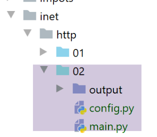
Il file [http/02/config] è il seguente:
Il file contiene un elenco di dizionari, ciascuno dei quali ha la seguente struttura:
- site: il nome di un server web;
- encoding: il tipo di codifica previsto per il documento;
- timeout: tempo massimo di attesa per la risposta del server, espresso in millisecondi. Trascorso questo tempo, il client si disconnetterà;
- url: URL del documento richiesto;
Il codice dello script [http/02/main.py] è il seguente:
Commenti
- riga 5: importiamo il modulo [pycurl];
- riga 3: importiamo la classe [BytesIO], che ci consentirà di memorizzare i dati ricevuti dal server in un flusso binario;
- righe 70–72: recuperiamo la configurazione dell'applicazione;
- righe 75–85: percorriamo l'elenco degli URL presenti nella configurazione;
- riga 81: per ogni URL, chiamiamo la funzione [get_url], che scaricherà l'URL url['target'] con un timeout di url['timeout'];
- riga 9: la funzione [get_url] riceve la configurazione per l'URL da interrogare;
- righe 16–19: la configurazione dell'URL viene recuperata in variabili separate;
- righe 26, 61: tutte le operazioni vengono eseguite all'interno di un blocco try/finally. Le eccezioni non vengono intercettate qui; vengono passate al codice chiamante, che le gestisce;
- riga 28: viene preparata una sessione [curl]. [pycurl.Curl()] restituisce una risorsa [curl] che eseguirà la transazione con un server;
- riga 30: istanziazione del flusso binario che memorizzerà i dati ricevuti;
- righe 32–48: il dizionario [options] configura la connessione [curl] al server. Le loro funzioni sono indicate nei commenti;
- righe 49–51: le opzioni di connessione vengono passate alla risorsa [curl];
- riga 53: si connette all'URL richiesto con le opzioni definite. Grazie all'opzione [curl.WRITEDATA: stream] (riga 36), la funzione [curl.perform()] memorizzerà i dati ricevuti in [stream];
- righe 54–60: viene creato il file HTML che memorizzerà il documento HTML ricevuto;
- riga 60: il flusso binario [flux.getvalue()] verrà memorizzato come stringa nel file HTML. La codifica di questa stringa è specificata nel metodo [decode(encoding)]. È quindi necessario conoscere la codifica del documento inviato dal server. Se si commette un errore, la decodifica del flusso binario fallirà. La codifica è specificata nel file di configurazione dell'URL (riga 12, ad esempio). Avremmo potuto gestire queste informazioni in modo dinamico, dato che il server le invia nelle sue intestazioni HTTP. Sarebbe stato preferibile. Per mantenere il codice semplice, non l’abbiamo fatto. Per determinare il tipo di codifica del documento, basta richiedere l’URL desiderato utilizzando un browser ed esaminare le intestazioni HTTP inviate dal browser in modalità debug (F12), oppure il documento stesso, poiché specifica anch’esso la codifica:


- righe 61–66: le risorse allocate vengono rilasciate;
Quando si esegue lo script [main.py], viene visualizzato il seguente output della console:
C:\Data\st-2020\dev\python\cours-2020\python3-flask-2020\venv\Scripts\python.exe C:/Data/st-2020/dev/python/cours-2020/python3-flask-2020/inet/http/02/main.py
-------------------------
sergetahe.com
-------------------------
Client : début de la communication avec le serveur [sergetahe.com]
* Trying 87.98.154.146:80...
* TCP_NODELAY set
* Connected to sergetahe.com (87.98.154.146) port 80 (#0)
> GET / HTTP/1.1
Host: sergetahe.com
User-Agent: PycURL/7.43.0.5 libcurl/7.68.0 OpenSSL/1.1.1d zlib/1.2.11 c-ares/1.15.0 WinIDN libssh2/1.9.0 nghttp2/1.40.0
Accept: */*
* Mark bundle as not supporting multiuse
< HTTP/1.1 302 Found
< Date: Mon, 06 Jul 2020 06:45:52 GMT
< Content-Type: text/html; charset=UTF-8
< Transfer-Encoding: chunked
< Server: Apache
< X-Powered-By: PHP/7.3
< Location: http://sergetahe.com/cours-tutoriels-de-programmation
< Set-Cookie: SERVERID68971=26218|XwLIo|XwLIo; path=/
< X-IPLB-Instance: 17102
<
* Ignoring the response-body
* Connection #0 to host sergetahe.com left intact
* Issue another request to this URL: 'http://sergetahe.com/cours-tutoriels-de-programmation'
* Found bundle for host sergetahe.com: 0x25eacafb5d0 [serially]
* Can not multiplex, even if we wanted to!
* Re-using existing connection! (#0) with host sergetahe.com
* Connected to sergetahe.com (87.98.154.146) port 80 (#0)
> GET /cours-tutoriels-de-programmation HTTP/1.1
Host: sergetahe.com
User-Agent: PycURL/7.43.0.5 libcurl/7.68.0 OpenSSL/1.1.1d zlib/1.2.11 c-ares/1.15.0 WinIDN libssh2/1.9.0 nghttp2/1.40.0
Accept: */*
* Mark bundle as not supporting multiuse
< HTTP/1.1 301 Moved Permanently
< Date: Mon, 06 Jul 2020 06:45:52 GMT
< Content-Type: text/html; charset=iso-8859-1
< Content-Length: 262
< Server: Apache
< Location: http://sergetahe.com/cours-tutoriels-de-programmation/
< Set-Cookie: SERVERID68971=26218|XwLIo|XwLIo; path=/
< X-IPLB-Instance: 17102
<
* Ignoring the response-body
* Connection #0 to host sergetahe.com left intact
* Issue another request to this URL: 'http://sergetahe.com/cours-tutoriels-de-programmation/'
* Found bundle for host sergetahe.com: 0x25eacafb5d0 [serially]
* Can not multiplex, even if we wanted to!
* Re-using existing connection! (#0) with host sergetahe.com
* Connected to sergetahe.com (87.98.154.146) port 80 (#0)
> GET /cours-tutoriels-de-programmation/ HTTP/1.1
Host: sergetahe.com
User-Agent: PycURL/7.43.0.5 libcurl/7.68.0 OpenSSL/1.1.1d zlib/1.2.11 c-ares/1.15.0 WinIDN libssh2/1.9.0 nghttp2/1.40.0
Accept: */*
* Mark bundle as not supporting multiuse
< HTTP/1.1 301 Moved Permanently
< Date: Mon, 06 Jul 2020 06:45:52 GMT
< Content-Type: text/html; charset=iso-8859-1
< Content-Length: 263
< Server: Apache
< Location: https://sergetahe.com/cours-tutoriels-de-programmation/
< Set-Cookie: SERVERID68971=26218|XwLIo|XwLIo; path=/
< X-IPLB-Instance: 17102
<
* Ignoring the response-body
* Connection #0 to host sergetahe.com left intact
* Issue another request to this URL: 'https://sergetahe.com/cours-tutoriels-de-programmation/'
* Trying 87.98.154.146:443...
* TCP_NODELAY set
* ….
* Using Stream ID: 1 (easy handle 0x25eaec77010)
> GET /cours-tutoriels-de-programmation/ HTTP/2
Host: sergetahe.com
user-agent: PycURL/7.43.0.5 libcurl/7.68.0 OpenSSL/1.1.1d zlib/1.2.11 c-ares/1.15.0 WinIDN libssh2/1.9.0 nghttp2/1.40.0
accept: */*
* Connection state changed (MAX_CONCURRENT_STREAMS == 128)!
< HTTP/2 200
< date: Mon, 06 Jul 2020 06:45:53 GMT
< content-type: text/html; charset=UTF-8
< server: Apache
< x-powered-by: PHP/7.3
< link: <https://sergetahe.com/cours-tutoriels-de-programmation/wp-json/>; rel="https://api.w.org/"
< link: <https://sergetahe.com/cours-tutoriels-de-programmation/>; rel=shortlink
< vary: Accept-Encoding
< x-iplb-instance: 17080
< set-cookie: SERVERID68971=26218|XwLIp|XwLIp; path=/
<
* Connection #1 to host sergetahe.com left intact
-------------------------
tahe.developpez.com
-------------------------
Client : début de la communication avec le serveur [tahe.developpez.com]
* Trying 87.98.130.52:443...
* TCP_NODELAY set
* Connected to tahe.developpez.com (87.98.130.52) port 443 (#0)
* ALPN, offering h2
* ALPN, offering http/1.1
* SSL connection using TLSv1.3 / TLS_AES_256_GCM_SHA384
* ALPN, server accepted to use http/1.1
* Server certificate:
* subject: CN=*.developpez.com
* start date: Jul 1 15:38:30 2020 GMT
* expire date: Sep 29 15:38:30 2020 GMT
* subjectAltName: host "tahe.developpez.com" matched cert's "*.developpez.com"
* issuer: C=US; O=Let's Encrypt; CN=Let's Encrypt Authority X3
* SSL certificate verify result: unable to get local issuer certificate (20), continuing anyway.
> GET / HTTP/1.1
Host: tahe.developpez.com
User-Agent: PycURL/7.43.0.5 libcurl/7.68.0 OpenSSL/1.1.1d zlib/1.2.11 c-ares/1.15.0 WinIDN libssh2/1.9.0 nghttp2/1.40.0
Accept: */*
* old SSL session ID is stale, removing
* Mark bundle as not supporting multiuse
< HTTP/1.1 200 OK
< Date: Mon, 06 Jul 2020 06:45:53 GMT
< Server: Apache/2.4.38 (Debian)
< X-Powered-By: PHP/5.3.29
< Vary: Accept-Encoding
< Transfer-Encoding: chunked
< Content-Type: text/html
<
* Connection #0 to host tahe.developpez.com left intact
-------------------------
www.polytech-angers.fr
-------------------------
Client : début de la communication avec le serveur [www.polytech-angers.fr]
* Trying 193.49.144.41:80...
* TCP_NODELAY set
* Connected to www.polytech-angers.fr (193.49.144.41) port 80 (#0)
> GET / HTTP/1.1
Host: www.polytech-angers.fr
User-Agent: PycURL/7.43.0.5 libcurl/7.68.0 OpenSSL/1.1.1d zlib/1.2.11 c-ares/1.15.0 WinIDN libssh2/1.9.0 nghttp2/1.40.0
Accept: */*
* Mark bundle as not supporting multiuse
< HTTP/1.1 301 Moved Permanently
< Date: Mon, 06 Jul 2020 06:45:54 GMT
< Server: Apache/2.4.29 (Ubuntu)
< Location: http://www.polytech-angers.fr/fr/index.html
< Cache-Control: max-age=1
< Expires: Mon, 06 Jul 2020 06:45:55 GMT
< Content-Length: 339
< Content-Type: text/html; charset=iso-8859-1
<
* Ignoring the response-body
* Connection #0 to host www.polytech-angers.fr left intact
* Issue another request to this URL: 'http://www.polytech-angers.fr/fr/index.html'
* Found bundle for host www.polytech-angers.fr: 0x25eacafb490 [serially]
* Can not multiplex, even if we wanted to!
* Re-using existing connection! (#0) with host www.polytech-angers.fr
* Connected to www.polytech-angers.fr (193.49.144.41) port 80 (#0)
> GET /fr/index.html HTTP/1.1
Host: www.polytech-angers.fr
User-Agent: PycURL/7.43.0.5 libcurl/7.68.0 OpenSSL/1.1.1d zlib/1.2.11 c-ares/1.15.0 WinIDN libssh2/1.9.0 nghttp2/1.40.0
Accept: */*
* Mark bundle as not supporting multiuse
< HTTP/1.1 200 OK
< Date: Mon, 06 Jul 2020 06:45:54 GMT
< Server: Apache/2.4.29 (Ubuntu)
< Last-Modified: Mon, 06 Jul 2020 04:50:09 GMT
< ETag: "85be-5a9be9bfcf228"
< Accept-Ranges: bytes
< Content-Length: 34238
< Cache-Control: max-age=1
< Expires: Mon, 06 Jul 2020 06:45:55 GMT
< Vary: Accept-Encoding
< Content-Type: text/html; charset=UTF-8
< Content-Language: fr
<
* Connection #0 to host www.polytech-angers.fr left intact
-------------------------
localhost
-------------------------
Client : début de la communication avec le serveur [localhost]
* Trying ::1:80...
* TCP_NODELAY set
* Connected to localhost (::1) port 80 (#0)
> GET / HTTP/1.1
Host: localhost
User-Agent: PycURL/7.43.0.5 libcurl/7.68.0 OpenSSL/1.1.1d zlib/1.2.11 c-ares/1.15.0 WinIDN libssh2/1.9.0 nghttp2/1.40.0
Accept: */*
* Mark bundle as not supporting multiuse
< HTTP/1.1 200 OK
< Date: Mon, 06 Jul 2020 06:45:54 GMT
< Server: Apache/2.4.35 (Win64) OpenSSL/1.1.1b PHP/7.2.19
< X-Powered-By: PHP/7.2.19
< Content-Length: 1776
< Content-Type: text/html; charset=UTF-8
<
* Connection #0 to host localhost left intact
Terminé...
Process finished with exit code 0
Commenti
- in blu, i comandi HTTP inviati al server;
- in verde, i dati ricevuti dal client in risposta;
- otteniamo gli stessi scambi che avremmo con lo strumento [curl];
- riga 9: viene richiesto l'URL [http://sergetahe.com/];
- riga 15: il server risponde che la pagina è stata spostata. Riga 21, il nuovo URL;
- riga 32: viene richiesto l'URL [http://sergetahe.com/cours-tutoriels-de-programmation];
- riga 38: il server risponde che la pagina è stata spostata. Riga 43, il nuovo URL;
- riga 54: viene richiesto l'URL [http://sergetahe.com/cours-tutoriels-de-programmation/];
- riga 60: il server risponde che la pagina è stata spostata. Riga 65, il nuovo URL. Utilizza il protocollo sicuro [HTTPS];
- Righe 71–75: viene stabilito il protocollo sicuro con il server;
- riga 76: viene richiesto l'URL [https://sergetahe.com/cours-tutoriels-de-programmation/];
- riga 82: il documento richiesto è stato trovato;
21.4.6. Conclusione
In questa sezione abbiamo esplorato il protocollo HTTP e scritto uno script [http/02/main.py] in grado di scaricare un URL dal web.
21.5. Il protocollo SMTP (Simple Mail Transfer Protocol)
21.5.1. Introduzione
In questo capitolo:
- [Server B] sarà un server SMTP locale che installeremo;
- [Client A] sarà un client SMTP in varie forme:
- il client [RawTcpClient] per esplorare il protocollo SMTP;
- uno script Python che emula il protocollo SMTP del client [RawTcpClient];
- uno script Python che utilizza il modulo [smtplib] per inviare ogni tipo di email;
21.5.2. Creazione di un indirizzo [Gmail]
Per eseguire i nostri test SMTP, avremo bisogno di un indirizzo e-mail a cui inviare i messaggi. A tal fine, creeremo un indirizzo Gmail [https://www.google.com/intl/fr/gmail/about/]:

Nota: invia alcune email all'indirizzo che hai creato. Non procedere finché non sei sicuro che l'account che hai creato sia in grado di ricevere email.
21.5.3. Installazione di un server SMTP
Per i nostri test, installeremo il server di posta [hMailServer], che è sia un server SMTP per l'invio di e-mail, sia un server POP3 (Post Office Protocol) per la lettura delle e-mail memorizzate sul server, sia un server IMAP (Internet Message Access Protocol) che consente anch'esso di leggere le e-mail memorizzate sul server ma va oltre. In particolare, consente di gestire l'archiviazione delle e-mail sul server.
Il server di posta [hMailServer] è disponibile all'URL [https://www.hmailserver.com/] (maggio 2019).
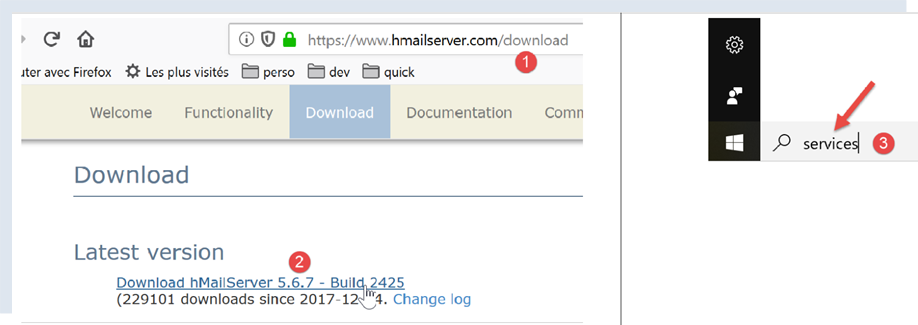
Durante l'installazione, ti verranno richieste alcune informazioni:

- nei punti [1-2], selezionare sia il server di posta che gli strumenti per amministrarlo;
- Durante l'installazione, ti verrà richiesta la password di amministratore: prendine nota, poiché ne avrai bisogno;
[hMailServer] si installa come servizio Windows che si avvia automaticamente all'avvio del computer. È preferibile scegliere un avvio manuale:
- In [3], digita [servizi] nella casella di ricerca sulla barra delle applicazioni;

- In [4-8], impostare il servizio in modalità [Manuale] (6), quindi avviarlo (7);
Una volta avviato, [hMailServer] deve essere configurato. Il server è stato installato con un programma di amministrazione [hMailServer Administrator]:

- in [2], nella casella di ricerca della barra di stato, digitare [hmailserver];
- In [3], avviare l'amministratore;
- In [4], connetti l'amministratore al server [hMailServer];
- in [5], inserisci la password che hai inserito durante l'installazione di [hMailServer];
Se hai dimenticato la password, procedi come segue:
- arresta il server [hMailServer];
- apri il file [<hmailserver>/bin/hmailserver.ini], dove <hmailserver> è la directory di installazione del server:

- In [100], rimuovi la password dalla riga [AdministratorPassword]. In questo modo l'amministratore non avrà più una password. Premi semplicemente [Invio] quando richiesto;
ValidLanguages=english,swedish
[Security]
AdministratorPassword=
[Database]
Continuiamo a configurare il server:

- In [1-2], aggiungi un dominio (se non ne esiste già uno);

- in [3], puoi inserire praticamente qualsiasi cosa per i test che eseguiremo. In realtà, dovresti inserire il nome di un dominio esistente;

Creeremo un account utente:
- fare clic con il tasto destro su [Account] (7) e poi su (8) per aggiungere un nuovo utente;
- nella scheda [Generale] (9), definiamo un utente denominato [guest] (10) con la password [guest] (11). Il suo indirizzo e-mail sarà [guest@localhost] (10);
- In [12], l'utente [guest] è abilitato;
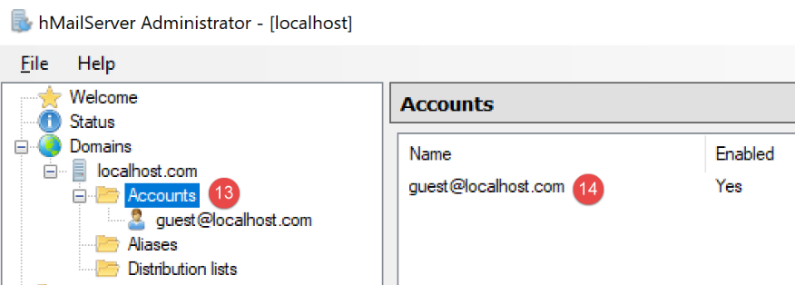
- in [13-14], l'utente viene creato;

- in [27], la porta del servizio SMTP;
- In [28], questo servizio non richiede l'autenticazione;
- in [30], inserisci il messaggio di benvenuto che il server SMTP invierà ai propri clienti;

Facciamo lo stesso con il server POP3:

Facciamo lo stesso per il server IMAP:

Specifichiamo il dominio predefinito del server [hMailServer] (potrebbero essercene diversi) :

- In [37], specificare che il dominio predefinito del server SMTP è quello creato in [38];
Dopo aver salvato questa configurazione, è possibile testarla come segue. Aprire un terminale PyCharm nella cartella utilities:

Quindi digitare il seguente comando:
(venv) C:\Data\st-2020\dev\python\cours-2020\python3-flask-2020\inet\utilitaires>RawTcpClient.exe localhost 25
Client [DESKTOP-30FF5FB:50170] connecté au serveur [localhost-25]
Tapez vos commandes (quit pour arrêter) :
<-- [220 Bienvenue sur le serveur SMTP localhost.com]
- Riga 1: Ci connettiamo alla porta 25 sul computer [localhost]. Qui è in esecuzione un server SMTP non protetto dal server [hMailServer];
- riga 4: riceviamo il messaggio di benvenuto che abbiamo configurato al punto 30 sopra;
Il server SMTP è ora attivo e funzionante. Digita il comando [quit] per terminare la sessione con il server SMTP 25.
Ora facciamo lo stesso con la porta 587, che è la porta predefinita per il servizio di inoltro della posta SMTP sicuro:
(venv) C:\Data\st-2020\dev\python\cours-2020\python3-flask-2020\inet\utilitaires>RawTcpClient.exe localhost 587
Client [DESKTOP-30FF5FB:50217] connecté au serveur [localhost-587]
Tapez vos commandes (quit pour arrêter) :
<-- [220 Bienvenue sur le serveur SMTP localhost.com]
- riga 4, la risposta dal server SMTP in esecuzione sulla porta 587;
Ora facciamo lo stesso con la porta 110, che è la porta predefinita per il servizio di recupero della posta POP3:
(venv) C:\Data\st-2020\dev\python\cours-2020\python3-flask-2020\inet\utilitaires>RawTcpClient.exe localhost 110
Client [DESKTOP-30FF5FB:50210] connecté au serveur [localhost-110]
Tapez vos commandes (quit pour arrêter) :
<-- [+OK Bienvenue sur le serveur POP3 localhost.com]
- alla riga 4, abbiamo ricevuto il messaggio di benvenuto dal server POP3;
Ora facciamo lo stesso con la porta 143, che è la porta predefinita per il servizio di recupero della posta IMAP:
(venv) C:\Data\st-2020\dev\python\cours-2020\python3-flask-2020\inet\utilitaires>RawTcpClient.exe localhost 143
Client [DESKTOP-30FF5FB:50212] connecté au serveur [localhost-143]
Tapez vos commandes (quit pour arrêter) :
<-- [* OK Bienvenue sur le serveur IMAP localhost.com]
- alla riga 4, abbiamo ricevuto il messaggio di benvenuto dal server IMAP;
21.5.4. Installazione di un client di posta elettronica
Per leggere l'e-mail che invieremo, abbiamo bisogno di un client di posta. Per chi non ne possiede uno, vi mostreremo come installare e configurare [Thunderbird]:
- Passo [1]: Scarica [Thunderbird] e installalo;

- Avviare il server di posta [hMailServer] se non è già in esecuzione;
- nei passaggi [2-3]: una volta avviato Thunderbird, creeremo un account e-mail per l'utente [guest@localhost] sul server di posta [hMailServer];


- nei passaggi [7-11]: il server POP3 che ci consentirà di leggere la posta dal server di posta [hMailServer] si trova su [localhost] e funziona sulla porta 110;
- in [12-16]: il server SMTP che ci consentirà di inviare posta per conto degli utenti del server di posta [hMailServer] si trova su [localhost] ed è in esecuzione sulla porta 25;
- [18]: È possibile verificare se questa configurazione è valida;


- in [26]: poiché non è presente la crittografia SSL, Thunderbird ci avverte che la nostra configurazione comporta dei rischi;
- in [28]: l'account è stato creato;
Per testare l'account creato, useremo Thunderbird per:
- inviare un'e-mail all'utente [guest@localhost.com] (protocollo SMTP);
- leggere l'e-mail ricevuta da questo utente (protocollo POP3);

- in [3]: il mittente;
- in [4]: il destinatario;
- in [5]: l'oggetto dell'e-mail;
- in [6]: il contenuto dell'e-mail;
- in [7]: per inviare l'e-mail;

- in [8-9]: recuperare l'e-mail dell'utente [guest@localhost];
- in [10-15]: il messaggio ricevuto;
Invieremo anche un'e-mail all'utente [pymailparlexemple@gmail.com]. Creiamo un account per lui in Thunderbird in modo che possa leggere l'e-mail che riceve:


- in [4]: inserisci quello che vuoi;
- in [5]: l'indirizzo è [pymailparlexemple@gmail.com];
- in [6]: inserisci la password che hai assegnato a questo utente al momento della creazione dell'account;
- in [7]: confermare questa configurazione;

- in [8]: Thunderbird ha recuperato le seguenti informazioni dal proprio database;
- in [9]: il protocollo di recupero della posta non è più POP3 ma IMAP. La differenza principale tra i due è che [POP3] scarica le email lette sul computer locale dove si trova il client di posta e le elimina dal server remoto, mentre [IMAP] mantiene le email sul server remoto;
- in [10]: identificazione del server SMTP;
- in [13]: per ottenere maggiori informazioni sui server IMAP e SMTP, passare alla configurazione manuale;

- in [14-17]: impostazioni del server IMAP;
- in [18-21]: impostazioni del server SMTP;
- in [22]: completare la configurazione;

- in [23-24]: il nuovo account Thunderbird;
- in [26]: scrivi un nuovo messaggio;

- in [27]: il mittente è [pymailparlexemple@gmail.com];
- in [28]: il destinatario è [pymailparlexemple@gmail.com];
- in [29-30]: il messaggio;
- in [31]: per inviarlo;

- in [32]: controlliamo la posta dai vari account;

- in [33-36]: l'e-mail ricevuta dall'utente [pymailparlexemple@gmail.com]
Creiamo anche:
- un nuovo account Gmail [pymail2parlexemple@gmail.com];
- un nuovo account Thunderbird [pymail2parlexemple@gmail.com] per recuperare i messaggi per l'utente con lo stesso nome:


Ora disponiamo degli strumenti per esplorare i protocolli SMTP, POP3 e IMAP. Inizieremo con il protocollo SMTP.
21.5.5. Il protocollo SMTP
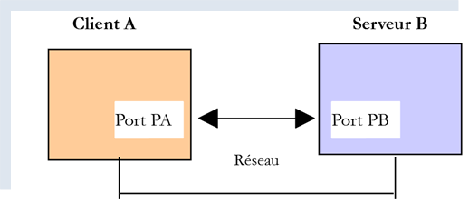
Esploreremo il protocollo SMTP esaminando i log del server [hMailServer]. Per farlo, li abilitiamo utilizzando lo strumento [hMailServerAdministrator]:


- In [2], i log sono abilitati;
- in [3-5]: li abilitiamo per i protocolli SMTP, POP3 e IMAP;
- in [7], ne richiediamo la visualizzazione;
- in [8], apriamo il file di log con un qualsiasi editor di testo;
Nell'esempio seguente, il client sarà [Thunderbird] e il server sarà [hMailServer]. Utilizzando Thunderbird, chiedete all'utente [guest@localhost.com] di inviare un messaggio a se stesso:

I log appariranno quindi come segue:
"SMTPD" 5828 22 "2020-07-07 10:02:54.263" "127.0.0.1" "SENT: 220 Bienvenue sur le serveur SMTP localhost.com"
"SMTPD" 21956 22 "2020-07-07 10:02:54.360" "127.0.0.1" "RECEIVED: EHLO [127.0.0.1]"
"SMTPD" 21956 22 "2020-07-07 10:02:54.362" "127.0.0.1" "SENT: 250-DESKTOP-30FF5FB[nl]250-SIZE 20480000[nl]250-AUTH LOGIN[nl]250 HELP"
"SMTPD" 5828 22 "2020-07-07 10:02:54.381" "127.0.0.1" "RECEIVED: MAIL FROM:<guest@localhost.com> SIZE=433"
"SMTPD" 5828 22 "2020-07-07 10:02:54.386" "127.0.0.1" "SENT: 250 OK"
"SMTPD" 21956 22 "2020-07-07 10:02:54.470" "127.0.0.1" "RECEIVED: RCPT TO:<guest@localhost.com>"
"SMTPD" 21956 22 "2020-07-07 10:02:54.473" "127.0.0.1" "SENT: 250 OK"
"SMTPD" 21956 22 "2020-07-07 10:02:54.478" "127.0.0.1" "RECEIVED: DATA"
"SMTPD" 21956 22 "2020-07-07 10:02:54.479" "127.0.0.1" "SENT: 354 OK, send."
"SMTPD" 21860 22 "2020-07-07 10:02:54.496" "127.0.0.1" "SENT: 250 Queued (0.016 seconds)"
"SMTPD" 21568 22 "2020-07-07 10:02:54.505" "127.0.0.1" "RECEIVED: QUIT"
"SMTPD" 21568 22 "2020-07-07 10:02:54.506" "127.0.0.1" "SENT: 221 goodbye"
Le righe sopra riportate descrivono il dialogo avvenuto tra il client SMTP (il client di posta elettronica Thunderbird) e il server SMTP (hMailServer). Le righe [SENT] indicano ciò che il server SMTP ha inviato al proprio client. Le righe [RECEIVED] indicano ciò che il server SMTP ha ricevuto dal proprio client.
- Riga 1: Subito dopo che il client si è connesso al server SMTP, il server invia un messaggio di benvenuto al client;
- riga 2: il client invia il comando [EHLO] per identificarsi. Qui fornisce il proprio indirizzo IP [127.0.0.1], che si riferisce al computer [localhost], ovvero al computer su cui è in esecuzione il client SMTP;
- Riga 3: il server invia una serie di risposte [250]. [nl] sta per [newline], ovvero il carattere \n. Le risposte sono nella forma [250-] tranne l'ultima, che è nella forma [250 ]. È così che il client SMTP capisce che la risposta del server SMTP è completa e che può inviare un comando. La serie di comandi [250] aveva lo scopo di indicare al client SMTP una serie di comandi che poteva utilizzare;
- riga 4: il client SMTP invia il comando [MAIL FROM: indirizzo_email_mittente], che indica chi sta inviando il messaggio;
- riga 5: il server SMTP risponde con [250 OK], indicando di aver compreso il comando;
- riga 6: il client SMTP invia il comando [RCPT TO: indirizzo_email_destinatario] per specificare l'indirizzo del destinatario;
- riga 7: il server SMTP indica nuovamente di aver compreso il comando;
- riga 8: il server SMTP invia il comando [DATA]. Ciò significa che sta per inviare il contenuto del messaggio;
- riga 9: il server SMTP indica con la risposta [354 OK] che è pronto a ricevere il messaggio. Il testo [send .] indica che il client SMTP deve terminare il proprio messaggio con una riga contenente solo un singolo punto;
- Ciò che non vediamo dopo è che il client SMTP invia il proprio messaggio. I log non lo mostrano;
- Riga 10: il client SMTP ha inviato il punto che indica la fine del messaggio. Il server SMTP risponde di aver messo in coda il messaggio;
- il client SMTP invia il comando [QUIT] per indicare che sta chiudendo la connessione;
- Riga 12: Il server risponde;
Ora che abbiamo compreso il dialogo client/server del protocollo SMTP, proviamo a riprodurlo con il nostro [RawTcpClient]. Useremo un terminale PyCharm:

Vediamo un nuovo esempio:
- Il client A sarà il client TCP generico [RawTcpClient];
- il server B sarà il server di posta [hMailServer];
- Il client A chiederà al server B di recapitare a se stesso un'e-mail inviata dall'utente [guest@localhost.com];
- verificheremo che il destinatario abbia effettivamente ricevuto l'e-mail inviata;
Avviamo il client come segue:
(venv) C:\Data\st-2020\dev\python\cours-2020\python3-flask-2020\inet\utilitaires>RawTcpClient.exe localhost 25 --quit bye
Client [DESKTOP-30FF5FB:53122] connecté au serveur [localhost-25]
Tapez vos commandes (quit pour arrêter) :
<-- [220 Bienvenue sur le serveur SMTP localhost.com]
- riga [1], ci connettiamo alla porta 25 sulla macchina locale, dove è in esecuzione il servizio SMTP [hMailServer]. L'argomento [--quit bye] indica che l'utente uscirà dal programma digitando il comando [bye]. Senza questo argomento, il comando per terminare il programma è [quit]. Tuttavia, [quit] è anche un comando del protocollo SMTP. Dobbiamo quindi evitare questa ambiguità;
- riga [2], il client è connesso con successo;
- riga [3], il client è in attesa dei comandi immessi dalla tastiera;
- riga [4], il server invia al client il suo messaggio di benvenuto;
Continuiamo il dialogo come segue:
(venv) C:\Data\st-2020\dev\python\cours-2020\python3-flask-2020\inet\utilitaires>RawTcpClient.exe localhost 25
Client [DESKTOP-30FF5FB:53155] connecté au serveur [localhost-25]
Tapez vos commandes (quit pour arrêter) :
<-- [220 Bienvenue sur le serveur SMTP localhost.com]
EHLO localhost
<-- [250-DESKTOP-30FF5FB]
<-- [250-SIZE 20480000]
<-- [250-AUTH LOGIN]
<-- [250 HELP]
MAIL FROM: guest@localhost.com
<-- [250 OK]
RCPT TO: guest@localhost.com
<-- [250 OK]
DATA
<-- [354 OK, send.]
from: guest@localhost.com
to: guest@localhost.com
subject: ceci est un test
ligne1
ligne2
.
<-- [250 Queued (37.824 seconds)]
QUIT
Fin de la connexion avec le serveur
- in [5], il client invia il comando [EHLO nome-macchina-client]. Il server risponde con una serie di messaggi nella forma [250-xx] (6). Il codice [250] indica che il comando inviato dal client è andato a buon fine;
- In [10], il client specifica il mittente del messaggio, in questo caso [guest@localhost.com];
- in [11], la risposta del server;
- in [12], viene indicato il destinatario del messaggio, in questo caso l'utente [guest@localhost.com];
- in [13], la risposta del server;
- in [14], il comando [DATA] comunica al server che il client sta per inviare il contenuto del messaggio;
- in [15], la risposta del server;
- in [16-22], il client deve inviare un elenco di righe di testo che terminano con una riga contenente solo un singolo punto. Il messaggio può contenere le righe [Subject:, From:, To:] (16-18) per definire rispettivamente l'oggetto, il mittente e il destinatario del messaggio;
- in [19], le intestazioni precedenti devono essere seguite da una riga vuota;
- in [20-21], il testo del messaggio;
- in [22], la riga contenente solo un singolo punto, che indica la fine del messaggio;
- in [23], una volta che il server ha ricevuto la riga contenente solo un singolo punto, mette in coda il messaggio;
- in [24], il client comunica al server che ha terminato;
- in [25], vediamo che il server ha chiuso la connessione con il client;
Ora controlliamo in Thunderbird che l'utente [guest@localhost.com] abbia effettivamente ricevuto il messaggio:

- In [1-6], vediamo che l'utente [guest@localhost.com] ha effettivamente ricevuto il messaggio;
Infine, il nostro client [RawTcpClient] ha inviato con successo un messaggio tramite il server SMTP [localhost]. Ora, utilizziamo lo stesso metodo per inviare un messaggio a [pymailparlexemple@gmail.com]:
(venv) C:\Data\st-2020\dev\python\cours-2020\python3-flask-2020\inet\utilitaires>RawTcpClient.exe smtp.gmail.com 587
Client [DESKTOP-30FF5FB:53210] connecté au serveur [smtp.gmail.com-587]
Tapez vos commandes (quit pour arrêter) :
<-- [220 smtp.gmail.com ESMTP w13sm643278wrr.67 - gsmtp]
EHLO localhost
<-- [250-smtp.gmail.com at your service, [2a01:cb05:80e8:b500:3c4b:2203:91fa:9b00]]
<-- [250-SIZE 35882577]
<-- [250-8BITMIME]
<-- [250-STARTTLS]
<-- [250-ENHANCEDSTATUSCODES]
<-- [250-PIPELINING]
<-- [250-CHUNKING]
<-- [250 SMTPUTF8]
MAIL FROM: pymailparlexemple@gmail.com
<-- [530 5.7.0 Must issue a STARTTLS command first. w13sm643278wrr.67 - gsmtp]
QUIT
Fin de la connexion avec le serveur
- riga 1: stiamo utilizzando il server SMTP di Gmail, che opera sulla porta 587;
- riga 15: siamo bloccati perché il server SMTP ci chiede di stabilire una connessione sicura, cosa che non sappiamo fare. A differenza dell'esempio precedente, il server [smtp.gmail.com] (riga 1) richiede un'autenticazion e. Accetta solo client registrati nel dominio [gmail.com]. Questa autenticazione è sicura e avviene tramite una connessione crittografata.
Il primo esempio ci ha fornito le basi per creare un client SMTP di base in Python. Il secondo ci ha mostrato che alcuni server SMTP (la maggior parte, in realtà) richiedono l'autenticazione tramite una connessione crittografata.
21.5.6. script [smtp/01]: un client SMTP di base
Implementeremo in Python ciò che abbiamo appreso in precedenza sul protocollo SMTP.

Il file [smtp/01/config] configura l'applicazione come segue:
- Righe 10–35: un elenco di email da inviare. Per ciascuna di esse vengono specificate le seguenti informazioni:
- [description]: un testo che descrive l'e-mail;
- [smtp-server]: il server SMTP da utilizzare;
- [smtp-port]: la sua porta di servizio;
- [da]: il mittente dell'e-mail;
- [a]: il destinatario dell'e-mail;
- [oggetto]: l'oggetto dell'e-mail;
- [content-type]: la codifica dell'e-mail;
- [messaggio]: il messaggio e-mail;
Il codice [01/main] per il client SMTP è il seguente:
1 2 3 4 5 6 7 8 9 10 11 12 13 14 15 16 17 18 19 20 21 22 23 24 25 26 27 28 29 30 31 32 33 34 35 36 37 38 39 40 41 42 43 44 45 46 47 48 49 50 51 52 53 54 55 56 57 58 59 60 61 62 63 64 65 66 67 68 69 70 71 72 73 74 75 76 77 78 79 80 81 82 83 84 85 86 87 88 89 90 91 92 93 94 95 96 97 98 99 100 101 102 103 104 105 106 107 108 109 110 111 112 113 114 115 116 117 118 119 120 121 122 123 124 125 126 127 128 129 130 131 132 133 134 135 136 137 138 139 140 141 142 143 144 145 146 147 148 149 150 151 152 153 154 155 156 157 158 159 | |
Commenti
- righe 134–136: configurazione dell'applicazione;
- righe 139–151: elaboriamo tutte le e-mail trovate nella configurazione;
- righe 141–143: visualizziamo ciò che stiamo per fare;
- righe 144–149: definiamo il messaggio da inviare. Il messaggio [message] è preceduto dalle intestazioni [From, To, Subject, Content-type];
- riga 151: l'e-mail viene inviata utilizzando la funzione [sendmail], che accetta due parametri:
- [mail]: il dizionario contenente le informazioni necessarie per inviare l'e-mail;
- [verbose]: un valore booleano che indica se gli scambi tra client e server devono essere registrati nella console;
- righe 154–156: tutte le eccezioni generate dalla funzione [sendmail] vengono intercettate e visualizzate;
- riga 6: [mail] è il dizionario che descrive l'e-mail da inviare;
- riga 14: nel protocollo SMTP, il client deve inviare il proprio nome. Qui, recuperiamo il nome della macchina locale che fungerà da client;
- riga 16: si connette al server SMTP a cui verrà inviato il messaggio;
- righe 22–23: se la connessione al server SMTP ha avuto esito positivo, il server invierà un messaggio di benvenuto, che viene letto qui;
- La funzione [sendmail] invia quindi i vari comandi che un client SMTP deve inviare:
- righe 24–25: il comando EHLO;
- righe 26–27: il comando MAIL FROM:;
- righe 28–29: il comando RCPT TO:;
- righe 30–31: il comando DATA;
- righe 32–41: invio del messaggio (Da, A, Oggetto, Tipo di contenuto, testo);
- righe 42-43: invio del carattere di fine messaggio;
- righe 44-457: il comando QUIT, che termina il dialogo del client con il server SMTP;
- l'esecuzione di [sendmail] avviene all'interno di un blocco [try / finally] che permette a tutte le eccezioni di essere propagate al codice chiamante. Sappiamo che il codice chiamante le intercetta tutte per visualizzarle;
- righe 48–50: rilascio delle risorse;
- riga 54: la funzione [send_command] è responsabile dell'invio dei comandi del client al server SMTP. Accetta quattro parametri:
- [connection]: la connessione che collega il client al server;
- [command]: il comando da inviare;
- [verbose]: se TRUE, gli scambi client/server vengono registrati nella console;
- [with_rclf]: se TRUE, invia il comando terminato dalla sequenza \r\n. Ciò è richiesto per tutti i comandi del protocollo SMTP, ma [send_command] viene utilizzato anche per inviare il messaggio. In tal caso, la sequenza \r\n non viene aggiunta;
- riga 62: il comando viene inviato solo se non è vuoto;
- righe 65-66: il comando viene inviato al server come stringa di byte UTF-8;
- righe 70-71: legge tutte le righe della risposta. Si presume che sia inferiore a 1000 caratteri. La risposta può contenere più righe. Ogni riga ha la forma XXX-YYY, dove XXX è un codice numerico, ad eccezione dell'ultima riga della risposta, che ha la forma XXX YYY (senza trattino);
- riga 76: legge il codice di errore XXX dalla prima riga;
- righe 78–80: se il codice numerico XXX è maggiore di 500, il server ha restituito un errore. Viene quindi generata un'eccezione;
Risultati
L'esecuzione dello script produce il seguente output della console:
C:\Data\st-2020\dev\python\cours-2020\python3-flask-2020\venv\Scripts\python.exe C:/Data/st-2020/dev/python/cours-2020/python3-flask-2020/inet/smtp/01/main.py
----------------------------------
Envoi du message [mail to localhost via localhost]
--> [EHLO DESKTOP-30FF5FB]
<-- [220 Bienvenue sur le serveur SMTP localhost.com]
--> [MAIL FROM: <guest@localhost.com>]
<-- [250-DESKTOP-30FF5FB
250-SIZE 20480000
250-AUTH LOGIN
250 HELP]
--> [RCPT TO: <guest@localhost.com>]
<-- [250 OK]
--> [DATA]
<-- [250 OK]
--> [From: guest@localhost.com
To: guest@localhost.com
Subject: to localhost via localhost
Content-type: text/plain; charset="utf-8"
aglaë séléné
va au marché
acheter des fleurs]
<-- [354 OK, send.]
--> [
.
]
<-- [250 Queued (0.000 seconds)]
--> [QUIT]
<-- [221 goodbye]
Message envoyé...
----------------------------------
Envoi du message [mail to gmail via gmail]
--> [EHLO DESKTOP-30FF5FB]
<-- [220 smtp.gmail.com ESMTP u1sm1364433wrb.78 - gsmtp]
--> [MAIL FROM: <pymailparlexemple@gmail.com>]
<-- [250-smtp.gmail.com at your service, [2a01:cb05:80e8:b500:3c4b:2203:91fa:9b00]
250-SIZE 35882577
250-8BITMIME
250-STARTTLS
250-ENHANCEDSTATUSCODES
250-PIPELINING
250-CHUNKING
250 SMTPUTF8]
--> [RCPT TO: <pymailparlexemple@gmail.com>]
<-- [530 5.7.0 Must issue a STARTTLS command first. u1sm1364433wrb.78 - gsmtp]
L'erreur suivante s'est produite : 5.7.0 Must issue a STARTTLS command first. u1sm1364433wrb.78 - gsmtp
Process finished with exit code 0
- Righe 3–30: l'utilizzo del server SMTP [hMailServer] per inviare un'e-mail a [guest@localhost] funziona correttamente;
- Righe 32–46: l'utilizzo del server SMTP [smtp.gmail.com] per inviare un'e-mail a [pymailparlexemple@gmail.com] non va a buon fine: alla riga 45, il server SMTP restituisce il codice di errore 530 con un messaggio di errore. Ciò indica che il client SMTP deve prima autenticarsi tramite una connessione sicura. Il nostro client non lo ha fatto e viene quindi rifiutato;
I risultati in Thunderbird sono i seguenti:

21.5.7. script [smtp/02]: un client SMTP scritto utilizzando la libreria [smtplib]
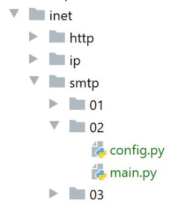
Il client precedente presenta almeno due carenze:
- non può utilizzare una connessione sicura se il server la richiede;
- non è in grado di allegare file al messaggio;
Affronteremo la prima lacuna nello script [smtp/02]. Nel nostro nuovo script, useremo il modulo Python [smtplib].
Lo script [smtp/02/main] utilizzerà il seguente file di configurazione JSON [smtp/02/config]:
Sono presenti gli stessi campi del file [smtp/01/config], con due campi aggiuntivi quando il server SMTP richiede l'autenticazione:
- riga 31, [user]: il nome utente utilizzato per autenticare la connessione;
- riga 32, [password]: la relativa password;
Questi due campi sono presenti solo se il server SMTP contattato richiede l'autenticazione. Questa viene quindi eseguita tramite una connessione sicura.
Il codice dello script [smtp/02/main.py] è il seguente:
Commenti
- righe 8–35: viene utilizzata solo la funzione [sendmail]. Ora utilizzerà il modulo [smtplib] (riga 2);
- Riga 16: connessione al server SMTP;
- riga 18: se [verbose=True], gli scambi client/server verranno visualizzati sulla console;
- righe 20–24: l'autenticazione viene eseguita se richiesta dal server SMTP;
- riga 22: l'autenticazione viene eseguita su una connessione sicura;
- riga 24: autenticazione;
- righe 26–33: invio del messaggio. Avrà quindi luogo il dialogo con lo script [smtp/01/main]. Se è avvenuta l'autenticazione, questa avverrà tramite una connessione sicura;
- riga 35: il dialogo client/server termina;
Prima di eseguire lo script [smtp/02/main], è necessario modificare le impostazioni dell'account Gmail [pymailparlexemple@gmail.com]:
- Accedere all'account Gmail [pymailparlexemple@gmail.com];
- modificare le seguenti impostazioni:

- In [2], consentire alle app meno sicure di accedere all'account;
Fai lo stesso per il secondo account Gmail [pymail2parlexemple@gmail.com].
Risultati
Quando si esegue lo script [smtp/02/main], viene visualizzato il seguente output della console:
C:\Data\st-2020\dev\python\cours-2020\python3-flask-2020\venv\Scripts\python.exe C:/Data/st-2020/dev/python/cours-2020/python3-flask-2020/inet/smtp/02/main.py
----------------------------------
Envoi du message [mail to localhost via localhost avec smtplib]
send: 'ehlo [192.168.43.163]\r\n'
reply: b'250-DESKTOP-30FF5FB\r\n'
reply: b'250-SIZE 20480000\r\n'
reply: b'250-AUTH LOGIN\r\n'
reply: b'250 HELP\r\n'
reply: retcode (250); Msg: b'DESKTOP-30FF5FB\nSIZE 20480000\nAUTH LOGIN\nHELP'
send: 'mail FROM:<guest@localhost.com> size=310\r\n'
reply: b'250 OK\r\n'
reply: retcode (250); Msg: b'OK'
send: 'rcpt TO:<guest@localhost.com>\r\n'
reply: b'250 OK\r\n'
reply: retcode (250); Msg: b'OK'
send: 'data\r\n'
reply: b'354 OK, send.\r\n'
reply: retcode (354); Msg: b'OK, send.'
data: (354, b'OK, send.')
send: b'Content-Type: text/plain; charset="utf-8"\r\nMIME-Version: 1.0\r\nContent-Transfer-Encoding: base64\r\nfrom: guest@localhost.com\r\nto: guest@localhost.com\r\ndate: Wed, 08 Jul 2020 08:35:39 +0200\r\nsubject: to localhost via localhost avec smtplib\r\n\r\nYWdsYcOrIHPDqWzDqW7DqQp2YSBhdSBtYXJjaMOpCmFjaGV0ZXIgZGVzIGZsZXVycw==\r\n.\r\n'
reply: b'250 Queued (0.000 seconds)\r\n'
reply: retcode (250); Msg: b'Queued (0.000 seconds)'
data: (250, b'Queued (0.000 seconds)')
send: 'quit\r\n'
reply: b'221 goodbye\r\n'
reply: retcode (221); Msg: b'goodbye'
Message envoyé...
----------------------------------
Envoi du message [mail to gmail via gmail avec smtplib]
send: 'ehlo [192.168.43.163]\r\n'
reply: b'250-smtp.gmail.com at your service, [37.172.118.130]\r\n'
reply: b'250-SIZE 35882577\r\n'
reply: b'250-8BITMIME\r\n'
reply: b'250-STARTTLS\r\n'
reply: b'250-ENHANCEDSTATUSCODES\r\n'
reply: b'250-PIPELINING\r\n'
reply: b'250-CHUNKING\r\n'
reply: b'250 SMTPUTF8\r\n'
reply: retcode (250); Msg: b'smtp.gmail.com at your service, [37.172.118.130]\nSIZE 35882577\n8BITMIME\nSTARTTLS\nENHANCEDSTATUSCODES\nPIPELINING\nCHUNKING\nSMTPUTF8'
send: 'STARTTLS\r\n'
reply: b'220 2.0.0 Ready to start TLS\r\n'
reply: retcode (220); Msg: b'2.0.0 Ready to start TLS'
send: 'ehlo [192.168.43.163]\r\n'
reply: b'250-smtp.gmail.com at your service, [37.172.118.130]\r\n'
reply: b'250-SIZE 35882577\r\n'
reply: b'250-8BITMIME\r\n'
reply: b'250-AUTH LOGIN PLAIN XOAUTH2 PLAIN-CLIENTTOKEN OAUTHBEARER XOAUTH\r\n'
reply: b'250-ENHANCEDSTATUSCODES\r\n'
reply: b'250-PIPELINING\r\n'
reply: b'250-CHUNKING\r\n'
reply: b'250 SMTPUTF8\r\n'
reply: retcode (250); Msg: b'smtp.gmail.com at your service, [37.172.118.130]\nSIZE 35882577\n8BITMIME\nAUTH LOGIN PLAIN XOAUTH2 PLAIN-CLIENTTOKEN OAUTHBEARER XOAUTH\nENHANCEDSTATUSCODES\nPIPELINING\nCHUNKING\nSMTPUTF8'
send: 'AUTH PLAIN AHB5bWFpbDJwYXJsZXhlbXBsZUBnbWFpbC5jb20AIzZwcklsaEQmQDFRWjNURw==\r\n'
reply: b'235 2.7.0 Accepted\r\n'
reply: retcode (235); Msg: b'2.7.0 Accepted'
send: 'mail FROM:<pymail2parlexemple@gmail.com> size=320\r\n'
reply: b'250 2.1.0 OK e5sm4132618wrs.33 - gsmtp\r\n'
reply: retcode (250); Msg: b'2.1.0 OK e5sm4132618wrs.33 - gsmtp'
send: 'rcpt TO:<pymail2parlexemple@gmail.com>\r\n'
reply: b'250 2.1.5 OK e5sm4132618wrs.33 - gsmtp\r\n'
reply: retcode (250); Msg: b'2.1.5 OK e5sm4132618wrs.33 - gsmtp'
send: 'data\r\n'
reply: b'354 Go ahead e5sm4132618wrs.33 - gsmtp\r\n'
reply: retcode (354); Msg: b'Go ahead e5sm4132618wrs.33 - gsmtp'
data: (354, b'Go ahead e5sm4132618wrs.33 - gsmtp')
send: b'Content-Type: text/plain; charset="utf-8"\r\nMIME-Version: 1.0\r\nContent-Transfer-Encoding: base64\r\nfrom: pymail2parlexemple@gmail.com\r\nto: pymail2parlexemple@gmail.com\r\ndate: Wed, 08 Jul 2020 08:35:40 +0200\r\nsubject: to gmail via gmail avec smtplib\r\n\r\nYWdsYcOrIHPDqWzDqW7DqQp2YSBhdSBtYXJjaMOpCmFjaGV0ZXIgZGVzIGZsZXVycw==\r\n.\r\n'
reply: b'250 2.0.0 OK 1594190139 e5sm4132618wrs.33 - gsmtp\r\n'
reply: retcode (250); Msg: b'2.0.0 OK 1594190139 e5sm4132618wrs.33 - gsmtp'
data: (250, b'2.0.0 OK 1594190139 e5sm4132618wrs.33 - gsmtp')
send: 'quit\r\n'
Message envoyé...
reply: b'221 2.0.0 closing connection e5sm4132618wrs.33 - gsmtp\r\n'
reply: retcode (221); Msg: b'2.0.0 closing connection e5sm4132618wrs.33 - gsmtp'
Process finished with exit code 0
- riga 40: il client [smtplib] avvia il dialogo per stabilire una connessione crittografata con il server SMTP, cosa che non siamo riusciti a fare nello script [smtp/main/01];
- per il resto, vediamo i familiari comandi del protocollo SMTP;
Se controlliamo l'account Gmail dell'utente [pymail2parlexemple], vediamo quanto segue:

21.5.8. script [smtp/03]: gestione dei file allegati
Completiamo lo script [smtp/02/main] in modo che l'e-mail inviata possa avere allegati.

Lo script [smtp/03/main] è configurato dal seguente script [smtp/03/config]:
Il file [smtp/03/config] differisce dal file [smtp/02/config] utilizzato in precedenza solo per la presenza facoltativa di un elenco [attachments] (righe 30–32), che specifica l'elenco dei file da allegare al messaggio da inviare.
Lo script [smtp/03/main] è il seguente:
Commenti
- righe 18-32: la funzione [sendmail] rimane la stessa di quando non c'erano allegati;
- riga 35: il codice seguente è tratto dalla documentazione ufficiale di Python;
- riga 36: il messaggio da inviare sarà composto da diverse parti: testo e file allegati. Questo è chiamato messaggio [Multipart];
- righe 37–40: il messaggio [Multipart] contiene i campi usuali presenti in qualsiasi email;
- riga 42: le varie parti del messaggio [Multipart] [msg] vengono allegate al messaggio utilizzando il metodo [msg.attach] (riga 81). Le parti allegate possono essere di qualsiasi tipo. Queste sono identificate da un tipo MIME. Il tipo MIME per il testo semplice è [MIMEText];
- righe 44–81: tutti gli allegati del messaggio da inviare vengono allegati al messaggio [Multipart] [msg] (riga 81);
- riga 44: [path] rappresenta il percorso assoluto del file da allegare;
- riga 47: per determinare il tipo MIME da utilizzare per l'allegato, useremo l'estensione del file (.docx, .php, ecc.) del file da allegare. Il metodo [mimetypes.guess_type] esegue questa operazione. Restituisce due informazioni:
- [ctype]: il tipo MIME del file;
- [encoding]: informazioni sulla sua codifica;
- righe 49–52: se il tipo MIME del file non può essere determinato, viene trattato come un file binario (riga 52);
- riga 54: il tipo MIME di un file è suddiviso in tipo primario / tipo secondario, ad esempio [application/pdf]. Separiamo questi due elementi;
- righe 56–76: vengono gestiti casi diversi a seconda del valore del tipo MIME primario. Ad esempio, nel caso di un file PDF ([application/pdf]), vengono eseguite le righe 70–76:
- righe 56–59: il caso in cui il file allegato sia un file di testo. In questo caso, viene creato un elemento di tipo [MIMEText] con contenuto [fp.read];
- righe 60–62: il caso in cui il file contenga un'immagine. In questo caso, creiamo un elemento di tipo [MIMEImage] con contenuto [fp.read];
- righe 63–65: il caso in cui il file sia un file audio. In questo caso, viene creato un elemento di tipo [MIMEAudio] con contenuto [fp.read];
- Righe 66–69: il caso in cui il file sia un'e-mail. In questo caso, creiamo un elemento di tipo [MIMEMessage] (riga 69) con contenuto [email.message_from_bytes(fp.read())]. A differenza dei casi precedenti in cui il contenuto dell'elemento MIME era il contenuto binario del file associato, qui il contenuto dell'elemento MIMEMessage è di tipo [email.message.Message];
- righe 70–76: altri casi. Ciò include, ad esempio, i file Word e PDF nel nostro esempio;
- riga 72: il file da allegare viene aperto in modalità binaria (rb=read binary);
- riga 74: [fp.read] legge l'intero file binario;
- righe 72–74: la struttura [with open(…) as file] fa due cose:
- apre il file e gli assegna il descrittore [file];
- garantisce che all'uscita dal blocco [with], indipendentemente dal verificarsi o meno di un errore, il descrittore [file] venga chiuso. Si tratta quindi di un'alternativa alla struttura [try file=open(…)/ finally];
- riga 73: viene creato un nuovo elemento [part] da includere nel messaggio Multipart. Qui viene utilizzata la classe [MIMEBase] e gli elementi [maintype, subtype] determinati alla riga 54 vengono passati al costruttore;
- riga 74: l'elemento da includere nel messaggio Multipart deve avere un contenuto. Questo può essere inizializzato utilizzando il metodo [set_payload];
- righe 75-76: i file allegati devono essere codificati a 7 bit. Storicamente, alcuni server SMTP supportavano solo caratteri codificati a 7 bit. Qui viene utilizzata la codifica nota come "Base64";
- riga 77: a partire da questa riga, l'elaborazione è la stessa di tutti i tipi MIME che abbiamo creato alle righe 56–76 [MIMEMessage, MIMEImage, MIMEAudio, MIMEBase, MIMEText];
- riga 79: l'elemento da aggiungere al messaggio Multipart ha un'intestazione che lo descrive. Qui indichiamo che l’elemento aggiunto corrisponde a un file allegato. Il nome di questo file è il terzo parametro passato al metodo [add_header]. Questo nome di file viene spesso utilizzato dai client di posta elettronica per salvare il file allegato con quel nome nel file system del client. Finora abbiamo lavorato con il percorso assoluto del file allegato. Qui passiamo semplicemente il suo nome senza il percorso (riga 78);
- riga 81: i dati binari del file vengono incorporati nel messaggio [msg Multipart];
- riga 83: una volta che tutte le parti del messaggio sono state allegate al [msg Multipart], questo viene inviato;
Risultati
Se eseguiamo lo script [smtp/03/main] con il file [smtp/02/config] già presente, l'account [pymail2parlexemple@gmail.com] riceve questo:

I file allegati sono riportati in [4, 9-11].
Vediamo ora un esempio con un allegato e-mail. Salveremo l'e-mail ricevuta in [3] sopra:

Salviamo l'e-mail con il nome [mail attachment 1.eml] nella cartella [smtp/03/attachments].
Ora modificheremo il file [smtp/03/config] come segue:
- alla riga 33, abbiamo aggiunto un allegato;
Ora eseguiamo nuovamente lo script [smtp/03/main]. Questo produce il seguente risultato nella casella di posta dell'utente [pymail2parlexemple@gmail.com]:

- in [1], l'e-mail ricevuta;
- in [2]: il testo del messaggio;
- in [3]: il testo dell'e-mail allegata;
- in [4]: Thunderbird ha trovato 5 allegati:
- [file_allegato.docx];
- [file allegato.pdf];
- [e-mail-allegata-1.eml]. Questo allegato è a sua volta un'e-mail contenente due allegati:
- [file_allegato.docx];
- [file allegato.pdf];
21.6. Il protocollo POP3
21.6.1. Introduzione
Per leggere le e-mail memorizzate su un server di posta, esistono due protocolli:
- il protocollo POP3 (Post Office Protocol), storicamente il primo protocollo ma oggi usato raramente;
- il protocollo IMAP (Internet Message Access Protocol), più recente del POP3 e attualmente il più diffuso;
Per approfondire il protocollo POP3, utilizzeremo la seguente architettura:
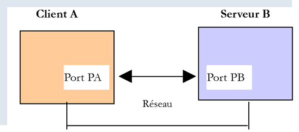
- [Server B] sarà, a seconda della situazione:
- un server POP3 locale, implementato dal server di posta [hMailServer];
- il server [pop.gmail.com], che è il server POP3 per il servizio di posta elettronica [gmail.com];
- [Client A] sarà un client POP3 in varie forme:
- il client [RawTcpClient] per esplorare il protocollo POP3;
- uno script Python che emula il protocollo POP3 del client [RawTcpClient];
- uno script Python che utilizza moduli Python per gestire gli allegati e stabilire una connessione crittografata e autenticata quando richiesto dal server POP3;
21.6.2. Esplorazione del protocollo POP3
Come abbiamo fatto con il protocollo SMTP, esploreremo il protocollo POP3 utilizzando i log del server di posta [hMailServer]. Dobbiamo avviare questo server.
Utilizzando Thunderbird, faremo quanto segue:
- inviare un'e-mail all'utente [guest@localhost.com];
- leggere la casella di posta di questo utente;


Nel punto [3-6] sopra, il messaggio ricevuto dall'utente [guest@localhost.com].
Esamineremo ora i log di [hMailServer]. A tal fine, utilizzeremo lo strumento di amministrazione [hMailServer Administrator]:
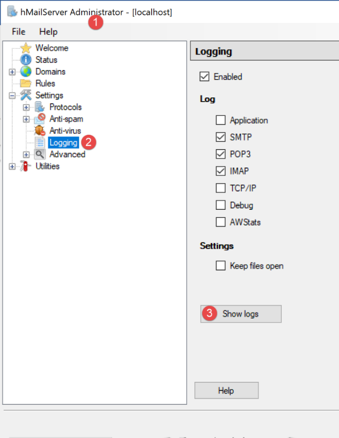
I log POP3 sono i seguenti (le ultime righe del file di log di oggi):
"POP3D" 35084 5 "2020-07-08 14:19:46.392" "127.0.0.1" "SENT: +OK Bienvenue sur le serveur POP3 localhost.com"
"POP3D" 34968 5 "2020-07-08 14:19:46.405" "127.0.0.1" "RECEIVED: CAPA"
"POP3D" 34968 5 "2020-07-08 14:19:46.407" "127.0.0.1" "SENT: +OK CAPA list follows[nl]USER[nl]UIDL[nl]TOP[nl]."
"POP3D" 35076 5 "2020-07-08 14:19:46.410" "127.0.0.1" "RECEIVED: USER guest"
"POP3D" 35076 5 "2020-07-08 14:19:46.411" "127.0.0.1" "SENT: +OK Send your password"
"POP3D" 34968 5 "2020-07-08 14:19:46.418" "127.0.0.1" "RECEIVED: PASS ***"
"POP3D" 34968 5 "2020-07-08 14:19:46.421" "127.0.0.1" "SENT: +OK Mailbox locked and ready"
"POP3D" 34968 5 "2020-07-08 14:19:46.423" "127.0.0.1" "RECEIVED: STAT"
"POP3D" 34968 5 "2020-07-08 14:19:46.423" "127.0.0.1" "SENT: +OK 1 612"
"POP3D" 34968 5 "2020-07-08 14:19:46.426" "127.0.0.1" "RECEIVED: LIST"
"POP3D" 34968 5 "2020-07-08 14:19:46.426" "127.0.0.1" "SENT: +OK 1 messages (612 octets)"
"POP3D" 34968 5 "2020-07-08 14:19:46.426" "127.0.0.1" "SENT: 1 612[nl]."
"POP3D" 35076 5 "2020-07-08 14:19:46.427" "127.0.0.1" "RECEIVED: UIDL"
"POP3D" 35076 5 "2020-07-08 14:19:46.428" "127.0.0.1" "SENT: +OK 1 messages (612 octets)[nl]1 42[nl]."
"POP3D" 34968 5 "2020-07-08 14:19:46.435" "127.0.0.1" "RECEIVED: RETR 1"
"POP3D" 34968 5 "2020-07-08 14:19:46.436" "127.0.0.1" "SENT: ."
"POP3D" 34924 5 "2020-07-08 14:19:46.459" "127.0.0.1" "RECEIVED: QUIT"
"POP3D" 34924 5 "2020-07-08 14:19:46.459" "127.0.0.1" "SENT: +OK POP3 server saying goodbye..."
- Riga 1: il server POP3 invia un messaggio di benvenuto al client (Thunderbird) che si è appena connesso;
- riga 2: il client invia il comando [CAPA] (capacità) per richiedere un elenco dei comandi che può utilizzare;
- riga 3: il server risponde che può utilizzare i comandi [USER, UIDL, TOP]. Il server POP inizia le sue risposte con [+OK] o [-ERR] per indicare se l'esecuzione del comando del client ha avuto esito positivo o negativo;
- Riga 4: il client invia il comando [USER guest] per indicare che desidera accedere alla casella di posta dell'utente [guest];
- Riga 5: il server risponde con [+OK] e richiede la password per [guest];
- riga 6: il client invia il comando [PASS password] per inviare la password dell'utente [guest]. In questo caso, la password viene inviata in chiaro perché il server POP3 non ha imposto una connessione sicura. Vedremo che questo sarà diverso con il server POP3 di Gmail;
- riga 7: il server ha verificato la validità del nome utente e della password. Indica che sta bloccando la casella di posta dell'utente [guest];
- riga 8: il client invia il comando [STAT], che richiede informazioni sulla casella di posta;
- riga 9: il server risponde che è presente un messaggio di 612 byte. Generalmente, risponde che sono presenti N messaggi e fornisce la dimensione totale di questi messaggi;
- riga 10: il client invia il comando [LIST]. Questo comando richiede l'elenco dei messaggi;
- riga 11: il server invia l'elenco dei messaggi nel seguente formato:
- una riga di riepilogo con il numero di messaggi e la loro dimensione totale;
- una riga per ogni messaggio che indica il numero del messaggio e la sua dimensione;
- riga 13: il client invia il comando [UIDL], che richiede un elenco di messaggi con i relativi identificatori. Ogni messaggio è identificato da un numero univoco all'interno del servizio di posta elettronica;
- riga 14: la risposta del server. Possiamo vedere che il messaggio n. 1 nell'elenco ha l'identificatore 42;
- riga 15: il client invia il comando [RETR 1], richiedendo che il messaggio n. 1 dell'elenco gli venga trasferito;
- riga 16: il server POP3 esegue l'operazione;
- riga 17: il client invia il comando [QUIT] per indicare che si sta disconnettendo dal server POP3;
- riga 18: anche il server chiuderà la sua connessione con il client, ma prima invia un messaggio di saluto;
Ora riprodurremo gli elementi del dialogo sopra riportato utilizzando il client [RawTcpClient] in esecuzione in una finestra di PyCharm:

Il dialogo è il seguente:
(venv) C:\Data\st-2020\dev\python\cours-2020\python3-flask-2020\inet\utilitaires>RawTcpClient.exe localhost 110
Client [DESKTOP-30FF5FB:63762] connecté au serveur [localhost-110]
Tapez vos commandes (quit pour arrêter) :
<-- [+OK Bienvenue sur le serveur POP3 localhost.com]
USER guest
<-- [+OK Send your password]
PASS guest
<-- [+OK Mailbox locked and ready]
LIST
<-- [+OK 1 messages (612 octets)]
<-- [1 612]
<-- [.]
RETR 1
<-- [+OK 612 octets]
<-- [Return-Path: guest@localhost.com]
<-- [Received: from [127.0.0.1] (DESKTOP-30FF5FB [127.0.0.1])]
<-- [ by DESKTOP-30FF5FB with ESMTP]
<-- [ ; Wed, 8 Jul 2020 14:19:36 +0200]
<-- [To: guest@localhost.com]
<-- [From: "guest@localhost.com" <guest@localhost.com>]
<-- [Subject: protocole POP3]
<-- [Message-ID: <ca895136-25c5-411e-373a-a68cbd0eca51@localhost.com>]
<-- [Date: Wed, 8 Jul 2020 14:19:33 +0200]
<-- [User-Agent: Mozilla/5.0 (Windows NT 10.0; WOW64; rv:68.0) Gecko/20100101]
<-- [ Thunderbird/68.10.0]
<-- [MIME-Version: 1.0]
<-- [Content-Type: text/plain; charset=utf-8; format=flowed]
<-- [Content-Transfer-Encoding: 8bit]
<-- [Content-Language: fr]
<-- []
<-- [ceci est un test pour découvrir le protocole POP3]
<-- []
<-- [.]
QUIT
Fin de la connexion avec le serveur
- Riga 1: apriamo una connessione alla porta 110 sul computer [localhost]. È qui che viene eseguito il servizio POP3 di [hMailServer];
- nelle righe 5, 7, 9, 13 e 34, utilizziamo i comandi [USER, PASS, LIST, RETR, QUIT];
- riga 4: il messaggio di benvenuto del server POP3;
- riga 5: specifichiamo che vogliamo accedere alla casella di posta dell'utente [guest];
- riga 7: inviamo la password dell'utente [guest] in testo normale;
- riga 9: richiediamo l'elenco dei messaggi presenti nella casella di posta;
- riga 13: richiesta del messaggio n. 1;
- righe 14–33: il server POP3 invia il messaggio n. 1;
- riga 34: la sessione viene terminata;
Ecco un riepilogo di alcuni comandi comuni accettati da un server POP3:
- il comando [USER] viene utilizzato per specificare l'utente di cui si desidera leggere la casella di posta;
- il comando [PASS] serve a specificare la password;
- il comando [LIST] richiede un elenco dei messaggi presenti nella casella di posta dell'utente;
- il comando [RETR] richiede il messaggio specificato dal numero fornito;
- Il comando [DELE] richiede la cancellazione del messaggio il cui numero è stato fornito;
- Il comando [QUIT] comunica al server che hai terminato;
La risposta del server può assumere diverse forme:
- una singola riga che inizia con [+OK] per indicare che il comando precedente del client è andato a buon fine;
- una singola riga che inizia con [-ERR] per indicare che il comando precedente del client non è andato a buon fine;
- più righe in cui:
- la prima riga inizia con [+OK];
- l'ultima riga è costituita da un singolo punto;
21.6.3. script [pop3/01]: un client POP3 di base
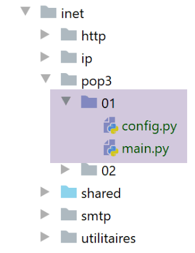
Poiché il protocollo POP3 ha la stessa struttura del protocollo SMTP, lo script [pop3/01/main.py] è un porting dello script [smtp/01/main.py]. Avrà il seguente file di configurazione [pop3/01/config.py]:
- righe 3–24: l'elenco delle caselle di posta da controllare. Qui ce n'è solo una;
- righe 4–12: significati delle voci del dizionario che definiscono ciascuna casella di posta;
- riga 15: il server POP3 interrogato è il server locale [hMailServer];
- righe 17-18: vogliamo leggere la casella di posta dell'utente [guest@localhost];
- riga 19: leggeremo al massimo 10 e-mail;
- riga 20: il client attenderà al massimo 1 secondo per una risposta dal server;
- riga 21: il tipo di codifica dei messaggi recuperati;
- riga 22: non elimineremo i messaggi scaricati;
Lo script [pop3/01/main.py] è il seguente:
Commenti
Come abbiamo accennato, [pop3/01/main.py] è un porting dello script [smtp/01/main.py] di cui abbiamo già parlato. Ci limiteremo a commentare le differenze principali:
- Riga 64: La funzione [readmails] si occupa di leggere le e-mail da una casella di posta. Le credenziali di accesso per questa casella sono memorizzate nel dizionario [mailbox]. Il secondo parametro [True] è il parametro [Verbose], che in questo caso abilita la registrazione delle comunicazioni tra client e server;
La funzione [readmails] è la seguente:
Commenti
- righe 8–14: recupera le informazioni di configurazione della casella di posta da controllare;
- righe 19–20: aprono una connessione al server POP3;
- righe 26-27: leggere il messaggio di benvenuto inviato dal server;
- righe 28-29: invia il comando [USER] per identificare l'utente di cui vogliamo le email;
- righe 30-31: invia il comando [PASS] per fornire la password di quell'utente;
- righe 32-33: invio del comando [LIST] per scoprire quanti messaggi sono presenti nella casella di posta di questo utente. La funzione [sendCommand] restituisce la prima riga della risposta del server. In questa riga, il server indica quanti messaggi sono presenti nella casella di posta;
- righe 34-36: recuperiamo il numero di messaggi dalla prima riga della risposta;
- righe 39–46: eseguiamo un ciclo su ogni messaggio. Per ciascuno di essi, inviamo due comandi:
- RETR i: per recuperare il messaggio n. i (righe 40–41);
- DELE i: per cancellarlo se la configurazione richiede che i messaggi letti vengano eliminati dal server (righe 43-44);
- righe 47–48: viene inviato il comando [QUIT] per comunicare al server che abbiamo terminato;
La funzione [send_command] è la seguente:
Commenti
- righe 13-18: il [command] viene inviato al server POP3 solo se non è vuoto. Ciò è necessario per leggere il messaggio di benvenuto inviato dal server POP3 anche se il client non ha ancora inviato alcun comando;
- righe 19-21: leggiamo il socket come se fosse un file di testo. Questo ci permette di utilizzare il metodo [readline] (riga 24) e quindi di leggere il messaggio riga per riga. Utilizziamo la chiave [encoding] del dizionario [mailbox] per specificare la codifica delle righe da leggere;
- riga 24: leggiamo la prima riga della risposta;
- righe 28–32: gestiamo il caso di un possibile errore. Questi sono del tipo [-ERR password non valida, -ERR casella di posta sconosciuta, -ERR impossibile bloccare la casella di posta…];
- riga 32: viene generata un'eccezione con il messaggio di errore;
- riga 35: solo i comandi [list, retr] possono avere risposte su più righe;
- righe 36–45: nel caso di una risposta su più righe, visualizziamo tutte le righe ricevute (righe 42–43) fino a quando non viene ricevuta l'ultima riga (riga 45);
- riga 46: restituiamo la prima riga letta perché, nel caso del comando [LIST], contiene il numero di messaggi presenti nella casella di posta;
Risultati
Prendiamo l'esempio precedente. Utilizzando Thunderbird, abbiamo inviato il seguente messaggio all'utente [guest@localhost] (hMailServer deve essere in esecuzione):

All'esecuzione, otteniamo i seguenti risultati:
C:\Data\st-2020\dev\python\cours-2020\python3-flask-2020\venv\Scripts\python.exe C:/Data/st-2020/dev/python/cours-2020/python3-flask-2020/inet/pop3/01/main.py
----------------------------------
Lecture de la boîte mail POP3 guest@localhost:110
<-- [+OK Bienvenue sur le serveur POP3 localhost.com]
--> [USER guest]
<-- [+OK Send your password]
--> [PASS guest]
<-- [+OK Mailbox locked and ready]
--> [LIST]
<-- [+OK 1 messages (612 octets)]
<-- [1 612]
<-- [.]
--> [RETR 1]
<-- [+OK 612 octets]
<-- [Return-Path: guest@localhost.com]
<-- [Received: from [127.0.0.1] (DESKTOP-30FF5FB [127.0.0.1])]
<-- [by DESKTOP-30FF5FB with ESMTP]
<-- [; Wed, 8 Jul 2020 14:19:36 +0200]
<-- [To: guest@localhost.com]
<-- [From: "guest@localhost.com" <guest@localhost.com>]
<-- [Subject: protocole POP3]
<-- [Message-ID: <ca895136-25c5-411e-373a-a68cbd0eca51@localhost.com>]
<-- [Date: Wed, 8 Jul 2020 14:19:33 +0200]
<-- [User-Agent: Mozilla/5.0 (Windows NT 10.0; WOW64; rv:68.0) Gecko/20100101]
<-- [Thunderbird/68.10.0]
<-- [MIME-Version: 1.0]
<-- [Content-Type: text/plain; charset=utf-8; format=flowed]
<-- [Content-Transfer-Encoding: 8bit]
<-- [Content-Language: fr]
<-- []
<-- [ceci est un test pour découvrir le protocole POP3]
<-- []
<-- [.]
--> [QUIT]
<-- [+OK POP3 server saying goodbye...]
Lecture terminée...
Process finished with exit code 0
- righe 15-31: il messaggio inviato a [guest@localhost] viene recuperato correttamente.
Qui abbiamo un client POP3 di base che manca di alcune funzionalità:
- la capacità di comunicare con un server POP3 sicuro;
- la capacità di leggere gli allegati in un messaggio;
Implementeremo queste due funzionalità con un nuovo script, che questa volta sarà più complesso.
21.6.4. script [pop3/02]: client POP3 con i moduli [poplib] e [email]
Scriveremo un client POP3 in grado di gestire gli allegati e di comunicare con server sicuri. Inoltre, salveremo i messaggi e i relativi allegati in file.
Useremo due moduli Python:
- [poplib]: che gestirà il protocollo POP3;
- [email]: che include numerosi sottomoduli che ci permetteranno di analizzare i messaggi ricevuti. Ogni messaggio è una stringa strutturata contenente:
- le intestazioni del messaggio [Da, A, Oggetto, Percorso di ritorno…];
- il messaggio in formato testo ed eventualmente HTML;
- gli allegati;
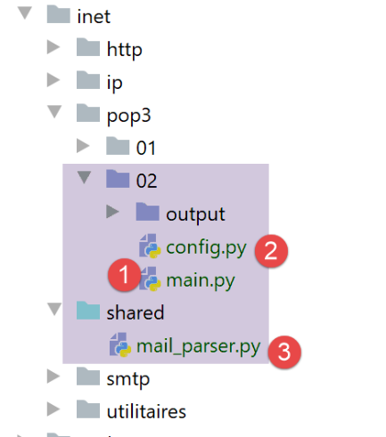
Lo script [inet/pop3/02/main] [1] è configurato dal file [inet/pop3/02/config] [2] e utilizza il modulo [inet/shared/mail_parser] [3].
Il file [pop3/02/config] è il seguente:
Il file definisce l'elenco delle caselle di posta da controllare e imposta il Python Path dell'applicazione.
Qui c'è una sola casella di posta:
- righe 22-23: l'utente di cui vogliamo leggere le e-mail;
- righe 20-21: il nome e la porta del server POP3 che memorizza le email di questo utente;
- riga 24: il numero massimo di email da recuperare. Infatti, se provi questo script sulla tua casella di posta, probabilmente non vorrai recuperare le centinaia di email che vi sono memorizzate;
- riga 25: un valore booleano che indica se un'e-mail deve essere eliminata dopo essere stata letta (delete=True);
- riga 26: impostare l'attributo [ssl] su True significa che il server POP3 definito nelle righe 20–21 utilizza una connessione crittografata;
- riga 27: il timeout massimo per le risposte del server, espresso in secondi;
- riga 28: la cartella in cui archiviare le email lette. Verrà creata se non esiste. Si tratta di un percorso relativo. Una volta eseguito, sarà relativo alla cartella da cui si avvia lo script. Con [Pycharm], questa cartella sarà quella contenente lo script [pop3/02];
Lo script [pop3/02/main] è il seguente:
- righe 17-36: la sezione [main] dello script è simile a quella dello script [pop3/01];
La funzione [readmails] è la seguente:
Commenti
- righe 6-7: importiamo la funzione [mail_parser.save_message] utilizzata alla riga 80;
- Il codice della funzione è incapsulato in un try (riga 22)/finally (riga 88). In questo modo, tutte le eccezioni vengono propagate al codice principale, che le intercetta e le visualizza;
- Righe 11–18: recuperiamo le informazioni di configurazione della casella di posta;
- righe 23-33: tutti i messaggi saranno memorizzati nella cartella [output/user], dove [output] e [user] sono definiti nella configurazione. Creiamo quindi prima la cartella [output], seguita dalla cartella [output/user]. Per creare quest'ultima, la eliminiamo prima alla riga 31. [shutil] è un modulo che deve essere importato. [shutil.rmtree(dir)] elimina la cartella [dir] e tutto ciò che contiene;
- per tutte le operazioni sui file di sistema, utilizziamo il modulo [os], che deve essere anch'esso importato;
- Righe 34–38: Stabiliamo una connessione con il server POP3. Se il server è sicuro, utilizziamo la classe [poplib.POP3_SSL]; altrimenti, la classe [poplib.POP3]. L'attributo [ssl] utilizzato alla riga 35 proviene dalla configurazione della casella di posta;
- Riga 45: Imposta il livello di log:
- 0: nessun log;
- 1: i comandi inviati dal client POP3 vengono registrati;
- 2: log dettagliati. Possiamo anche vedere cosa riceve il client POP3;
- Riga 47: Dopo la connessione, il server POP3 invia un messaggio di benvenuto. Leggiamo questo messaggio;
- righe 48–49: comando USER del protocollo POP3;
- righe 50–51: comando PASS del protocollo POP3;
- righe 52–53: comando LIST del protocollo POP3. La risposta è una tupla (risposta, ['numero_messaggio byte'…], byte), ad esempio list = (b'+OK 3 messaggi (3859 byte)', [b'1 584', b'2 550', b'3 2725'], 22). Si nota che i primi due elementi della tupla sono byte (preceduti dal prefisso b). list[1] è un array in cui ogni elemento è una sequenza di byte contenente due informazioni: il numero del messaggio e la sua dimensione in byte;
- riga 56: da quanto detto sopra, possiamo dedurre che il numero di messaggi nella casella di posta può essere ottenuto tramite [len[list1]];
- righe 59–84: eseguiamo un ciclo su ogni messaggio. Ci fermiamo quando tutti sono stati letti o quando abbiamo raggiunto il numero massimo di email impostato dalla configurazione;
- riga 61: elemento corrente dell'array list[1], quindi qualcosa come b'1 584', una sequenza di byte;
- riga 63: convertiamo la sequenza di byte in una stringa. Ora abbiamo la stringa '1 584';
- riga 66: recuperiamo il numero del messaggio, in questo caso la stringa '1';
- riga 68: inviamo il comando POP3 RETR. Riceviamo una risposta del tipo:
[message=(b'+OK 584 octets', [b'Return-Path: guest@localhost', b'Received: from [127.0.0.1] (localhost [127.0.0.1])', b'\tby DESKTOP-528I5CU with ESMTPA', b'\t; Tue, 17 Mar 2020 09:41:50 +0100', b'To: guest@localhost', b'From: "guest@localhost" <guest@localhost>', b'Subject: test', b'Message-ID: <2572d0f0-5b7c-2c31-5a70-c628293d5709@localhost>', b'Date: Tue, 17 Mar 2020 09:41:48 +0100', b'User-Agent: Mozilla/5.0 (Windows NT 10.0; WOW64; rv:68.0) Gecko/20100101', b' Thunderbird/68.6.0', b'MIME-Version: 1.0', b'Content-Type: text/plain; charset=utf-8; format=flowed', b'Content-Transfer-Encoding: 8bit', b'Content-Language: fr', b'', b'h\xc3\xa9l\xc3\xa8ne est all\xc3\xa9e au march\xc3\xa9 acheter des l\xc3\xa9gumes.', b''], 614)]
- (continua)
- message è una tupla di tre elementi;
- message[1] è un array di righe. Ogni riga è una sequenza di byte (preceduta dal prefisso 'b'). Il messaggio completo è formato da questo insieme di righe;
- [Return-Path, Received, To, Subject, Message-ID, Content-Type, Content-Transfer-Encoding, Content-Language] sono le intestazioni del messaggio. Ciascuna fornisce informazioni sul messaggio ricevuto. Queste informazioni saranno utilizzate per recuperare il corpo del messaggio (il penultimo elemento dell'array message[1]);
- Righe 71–73: creiamo la stringa [strMessage] composta da tutte le righe del messaggio. Ora abbiamo il messaggio sotto forma di stringa di caratteri. Questo messaggio può contenere altri messaggi oltre agli allegati. Questo perché gli allegati sono memorizzati come stringhe di caratteri. Quindi, un punto chiave da ricordare è che un'e-mail è inizialmente una stringa di caratteri, ed è questa stringa che deve essere analizzata per estrarre gli allegati, eventuali altri messaggi incorporati e, naturalmente, il corpo del messaggio, ovvero ciò che ha scritto il mittente;
- righe 74–78: memorizzeremo il corpo del messaggio e gli allegati nella cartella [dir3];
- righe 79–80: delegheremo l'analisi del messaggio a una funzione [save_message]:
- il primo parametro è [dir3], la cartella in cui deve essere memorizzato il contenuto del messaggio;
- il secondo parametro è di tipo [email.message.Message]. Questo oggetto dispone di metodi per recuperare le varie parti del messaggio (corpo, allegati) e tutte le sue intestazioni. È necessario importare il modulo [email] per accedere a questo oggetto. La funzione [email.message_from_string] consente di costruire un oggetto [email.message.Message] dalla stringa del messaggio;
La funzione [save_message] fa parte del modulo [mail_parser]:

Il modulo [mail_parser] è stato importato alle righe 6–7 della funzione [readmails];
In [mail_parser.py], la funzione [save_message] è la seguente:
# imports
import codecs
import email.contentmanager
import email.header
import email.iterators
import email.message
import os
# sauvegarde d'un message de type email.message.Message
# cette fonction peut être appelée de façon récursive
def save_message(output: str, email_message: email.message.Message, irfc822=0) -> int:
# output : dossier de sauvegarde des messages
# email_message : le message à sauvegarder
# irfc822 : n° courant de la numérotation des mails attachés
#
# partie du message
part = email_message
# les entêtes [From, To, Subject] sont trouvés dans une des parties multipart
# ou bien dans une partie [text/*] lorsqu'il n'y a pas de partie [multipart]
keys = part.keys()
# From doit faire partie des entêtes, sinon la partie n'a pas les entêtes qu'on cherche
if "From" in keys:
# on récupère certains entêtes
headers = [f"From: {decode_header(part.get('From'))}",
f"To: {decode_header(part.get('To'))}",
f"Subject: {decode_header(part.get('Subject'))}",
f"Return-Path: {decode_header(part.get('Return-Path'))}",
f"User-Agent: {decode_header(part.get('User-Agent'))}",
f"Date: {decode_header(part.get('Date'))}"]
# sauvegarde des entêtes dans un fichier texte
with codecs.open(f"{output}/headers.txt", "w", "utf-8") as file:
# écriture dans fichier
string = '\r\n'.join(headers)
file.write(f"{string}\r\n")
# type de la partie [part]
main_type = part.get_content_maintype()
…
Commenti
- riga 12: la funzione accetta fino a tre parametri:
- [output]: la cartella in cui salvare il messaggio (2° parametro);
- [email_message]: un messaggio di tipo [email.message.Message]. Si tratta di un tipo strutturato. Contiene il testo dell'e-mail e tutti i file allegati e fornisce metodi per recuperare i suoi vari elementi;
- [irfc822]: questo parametro viene utilizzato per numerare le email incapsulate in [email_message];
- riga 18: l'oggetto [email_message] viene inserito in [part]. Il tipo [email.message.Message] contiene parti [part] (corpo del messaggio, allegati, email incapsulate) che sono anch'esse di tipo [email.message.Message]. Ogni [part] può avere sottoparti. Pertanto, il tipo [email.message.Message] è un albero di elementi di tipo [email.message.Message]:
- [part.ismultipart()] è [True] se la parte [part] contiene sottoparti. Queste sono quindi disponibili tramite [part.get_payload()];
- quando [part.ismultipart()] è [False], significa che abbiamo raggiunto un nodo foglia nell'albero del messaggio iniziale: questo può essere:
- il corpo del messaggio sotto forma di testo semplice;
- il corpo del messaggio sotto forma di testo HTML;
- un allegato (ad eccezione di un messaggio incapsulato per il quale [part.ismultipart()] è [True]);
- a causa della natura ad albero del parametro [email.message.Message], la funzione [save_message] verrà chiamata in modo ricorsivo. La ricorsione si interrompe quando si raggiungono le foglie dell'albero, ovvero una parte [part] per la quale [part.ismultipart()] è [False];
- riga 21: richiediamo le chiavi (o intestazioni) del messaggio attualmente in fase di analisi (che, a causa della ricorsione, potrebbe essere una sottoparte del messaggio iniziale);
- righe 23–35: vogliamo registrare le intestazioni:
- [From]: il mittente del messaggio;
- [To]: il destinatario del messaggio;
- [Subject]: l'oggetto del messaggio;
- [Return-Path]: il destinatario a cui inviare una risposta, se desiderata. Infatti, questa informazione non è sempre inclusa nel campo [From];
- [User-Agent]: il client POP3 che comunica con il server POP3;
- [Date]: la data di invio dell'e-mail;
- riga 23: solo una delle parti del messaggio contiene queste intestazioni. Per le altre parti, il codice nelle righe 23–35 verrà ignorato;
- righe 25–30: creiamo un elenco con le sei intestazioni;
- riga 25: analizziamo la prima intestazione:
- [part.get(key)] recupera l'intestazione associata alla chiave [key];
- questa intestazione potrebbe essere codificata. Se la codifica non è UTF-8, l'intestazione viene decodificata e ricodificata in UTF-8 utilizzando la funzione [decode_header];
- la prima intestazione avrà il formato [From: pymail2lexemple@gmail.com];
- righe 31–35: le intestazioni vengono salvate nel file [output/headers.txt];
La funzione [decode_header] è la seguente (sempre in [mail_parser.py]):
Commenti
- riga 4: decodifica l'intestazione:
- è necessario importare il modulo [email.header];
- otteniamo un elenco di tuple [(intestazione1, codifica1), (intestazione2, codifica2), ...];
- per le intestazioni [From, To, Subject, Return-Path, Date], l'elenco conterrà un solo elemento;
- riga 8: recupera la singola intestazione e la sua codifica:
- se [codifica == Nessuna] allora [intestazione] è l'intestazione come stringa;
- altrimenti, [header] è una sequenza di byte che rappresenta l'intestazione codificata;
- righe 10–11: se non c'era codifica, allora restituiamo l'intestazione;
- righe 12-14: se c'era una codifica, allora decodifichiamo la sequenza di byte che abbiamo recuperato in una stringa e la restituiamo;
Torniamo alla funzione [save_message]:
Commenti
- righe 1–26: abbiamo elaborato le intestazioni del messaggio iniziale;
- righe 28-31: le parti di un messaggio di tipo [email.message.Message] hanno un tipo principale e un sottotipo. Li recuperiamo;
- righe 32-35: se la parte elaborata è di tipo [text/plain], allora abbiamo raggiunto un nodo foglia nell'albero del messaggio iniziale. Questo è il testo che il mittente ha scritto nel proprio messaggio;
- riga 35: questo testo viene scritto in un file:
- il primo parametro [output] è la cartella in cui il testo deve essere salvato;
- il secondo parametro è la parte del messaggio contenente il testo da salvare;
- il terzo parametro è 0 per salvare testo semplice, 1 per testo HTML;
- righe 37–40: se la parte è di tipo [text/html], allora abbiamo raggiunto anche una foglia nell'albero dei messaggi iniziale. Questo è il testo che il mittente ha scritto nel proprio messaggio, questa volta in formato HTML. Non tutti i client di posta elettronica supportano questo formato;
La funzione [save_textmessage] funziona come segue:
Commenti
- Come le intestazioni, anche il testo del messaggio può essere codificato. Esistono due possibili codifiche:
- la codifica iniziale del testo (UTF-8, ISO-8859-1, ecc.). Si tratta della codifica utilizzata dal server di posta che ha inviato il messaggio. È indicata dall'intestazione [Content-Type] del messaggio ricevuto;
- una seconda codifica a cui il testo originale potrebbe essere stato sottoposto per essere inviato. Questa si ricava dall'intestazione [Transfer-Content-Encoding] del messaggio ricevuto;
- riga 6: la codifica iniziale del testo;
- riga 11: la seconda codifica a cui il testo è stato sottoposto per il trasferimento al destinatario;
- righe 9, 13: queste due informazioni vengono inserite nell'elenco [headers]. Verranno aggiunte alle informazioni nel file [headers.txt], che registra determinate intestazioni dei messaggi;
- riga 20: [email.contentmanager.raw_data_manager.get_content] recupera il messaggio con la sua codifica iniziale 1. Abbiamo rimosso la codifica 2. Tuttavia, l'oggetto [email.contentmanager.raw_data_manager] supporta solo due tipi di [Transfer-Content-Encoding]:
- [quoted-printable];
- [base64];
Ignora gli altri. Tuttavia, Thunderbird, ad esempio, utilizza il [Transfer-Content-Encoding] denominato "8bit". Questa codifica viene ignorata e i messaggi contenenti caratteri accentati risultano illeggibili. Il messaggio può quindi essere recuperato utilizzando il metodo [part.get_payload()] (righe 15–17);
- riga 21: a questo punto, abbiamo il messaggio privato della sua codifica di trasferimento, ovvero il messaggio così come è stato scritto dal mittente;
- righe 22–37: questo è il caso in cui dobbiamo salvare un messaggio di testo;
- righe 24–28: salviamo le due intestazioni costruite nelle righe 9 e 13 nel file [headers.txt]. Questo file esiste già e contiene delle intestazioni. Pertanto, utilizziamo la modalità "a" (riga 25) per aprire questo file. "a" sta per "append" (aggiungi) e le nuove intestazioni vengono aggiunte (alla fine del file) al contenuto esistente del file [headers.txt];
- riga 30: il nome del file in cui salvare il messaggio di testo;
- riga 33: il nome del file in cui salvare il messaggio HTML;
- righe 34–37: il testo UTF-8 viene salvato in un file;
Torniamo alla funzione [save_message]:
Commenti
- righe 33-40: abbiamo gestito due possibili casi per un messaggio all'estremità dell'albero dei messaggi iniziale (senza sottoparti). Ci restano ancora due casi da gestire:
- righe 43-62: il caso in cui la parte analizzata stessa contenga sottoparti (part.ismultipart()==True);
- righe 63–68: per i casi rimanenti, gestiamo solo il caso in cui la parte analizzata sia un allegato;
Gestiamo quest'ultimo caso. Ci troviamo nuovamente alla fine del messaggio iniziale (senza sottoparti). Abbiamo già incontrato due casi di questo tipo: i tipi text/plain e text/html. Ora gestiamo il caso del file allegato.
- riga 66: l'allegato è identificato dalla chiave [Content-Disposition];
- riga 67: se questa chiave esiste e inizia con la stringa [attachment], allora si tratta di un file allegato al messaggio;
- riga 68: l'allegato viene salvato nella cartella [output];
La funzione [save_attachment] è la seguente:
- Riga 4: Se [part] è un allegato, il nome del file allegato viene ottenuto tramite [part.get_filename]. Viene conservato solo il nome del file, non il suo percorso;
- riga 8: I nomi dei file sono generalmente codificati allo stesso modo delle intestazioni dei messaggi. Pertanto, utilizziamo la funzione [decode_header] per decodificarli;
- riga 11: il contenuto del file allegato è attualmente una stringa prodotta dalla codifica (spesso base64) del contenuto originale del file in testo. Per recuperare questo contenuto originale, utilizziamo la funzione [part.get_payload(decode=True)]. Il parametro [decode=True] indica che il contenuto del file allegato deve essere decodificato. Ciò produce una sequenza di byte;
- Riga 10: questa sequenza di byte viene salvata nel file [output/filename]. La modalità "wb" per l'apertura del file sta per "write binary";
Torniamo al codice della funzione [save_message]:
Commenti
- Abbiamo gestito i casi relativi ai nodi foglia dell'albero del messaggio iniziale: le parti [text/plain, text/html e Content-Disposition=attachment;…] Dobbiamo ancora gestire il caso in cui la parte analizzata sia un contenitore di parti, ovvero contenga sottoparti [part.is_multipart()==True], riga 41. Per raggiungere i nodi finali dell'albero dei messaggi, dobbiamo quindi analizzare queste sottoparti;
- riga 43: trattiamo in modo speciale il caso in cui la parte analizzata abbia un tipo [message/rfc822]. Questo è il tipo di un'e-mail. Si tratta quindi del caso in cui un'e-mail ha un'altra e-mail come allegato;
Il codice è il seguente:
# si le message est un conteneur de parties
elif part.is_multipart():
# cas particulier du mail attaché
if type_of_part == "message/rfc822":
# création d'un nouveau dossier output2 pour le mail attaché
irfc822 += 1
output2 = f"{output}/rfc822_{irfc822}"
os.mkdir(output2)
# sauvegarde des sous-parties du message irfc822 dans output2
for subpart in part.get_payload():
# dans le nouveau dossier irfc822 redémarre à 0
save_message(output2, subpart, 0)
else:
# on n'a pas affaire à un mail attaché
# sauvegarde des sous-parties dans le dossier courant output
# irfc822 doit alors être incrémenté pour chaque sous-partie message/rfc822
for subpart in part.get_payload():
# save_message rend la dernière valeur de irfc822
# incrémentée de 1 si subpart="message/rfc822", pas incrémentée sinon
irfc822 = save_message(output, subpart, irfc822)
…
return irfc822
- la differenza tra una parte [message/rfc822] e le altre parti multipart sta nel fatto che la directory di salvataggio cambia;
- righe 6–8: per la parte [message/rfc822], la directory di salvataggio diventa quella alla riga 7 [output/rfc822_x], dove x è il numero dell'e-mail allegata, 1 per la prima, 2 per la seconda…;
- riga 21: per le altre parti multipart, la directory di salvataggio rimane la directory [output] del messaggio originale. La directory non viene modificata;
- righe 10–12: ogni sottoparte viene salvata tramite una chiamata ricorsiva a [save_message]. Il terzo parametro è il numero di indice delle email incapsulate in [subpart]. Inizialmente, questo indice è 0;
- riga 21: stessa spiegazione della riga 12, ma il valore del terzo parametro [irfc822] cambia. Se nel ciclo delle righe 18–21 sono presenti più email incapsulate, queste devono essere memorizzate nelle cartelle […/rfc822-1…/rfc822_2…]. Pertanto, il terzo parametro della funzione [save_message] deve assumere i valori 1, 2, 3 e così via. Per farlo, [save_message] imposta il valore di [irfc822] (riga 21).
Facciamo un esempio e supponiamo che l’elenco delle sottoparti alla riga 18 sia [subpart1, subpart2, subpart3, subpart4, subpart5] e che [subpart1, subpart3, subpart5] siano email allegate, [subpart2] sia una parte text/plain e [subpart4] sia un allegato, e che non abbiamo ancora incontrato un'e-mail allegata nel messaggio [irfc822=0]. In questo caso:
- (continua)
- [subpart1] viene salvata alla riga 21: la funzione [saveMessage] viene eseguita con irfc822=0;
- [subpart1] è un allegato e-mail, quindi irfc822 viene impostato su 1 (riga 6 del codice). Viene creata una cartella [output/irfc822_1]. Il valore restituito da [saveMessage(output,subpart1,0)] è quindi 1 (riga 23);
- [subpart2] viene salvato alla riga 21: la funzione [saveMessage] viene eseguita con irfc822=1;
- [subpart2] non è un allegato e-mail. Pertanto, irfc822 rimane a 1. Questo è il valore recuperato alla riga 21;
- [subpart3] viene salvato alla riga 21: la funzione [save_message] viene eseguita con irfc822=1;
- [subpart3] è un allegato e-mail, quindi irfc822 passa a 2 (riga 6 del codice). Viene creata una cartella [output/irfc822_2]. Il valore restituito da [save_message(output,subpart1,1)] è quindi 2 (riga 21);
- [subpart4] viene salvato alla riga 21: la funzione [save_message] viene eseguita con irfc822=2;
- [subpart4] non è un allegato e-mail. Pertanto, irfc822 rimane a 2. Questo è il valore recuperato alla riga 21;
- [subpart5] viene salvato dalla riga 21: la funzione [save_message] viene eseguita con irfc822=2;
- [subpart5] è un allegato e-mail, quindi irfc822 passa a 3 (riga 6 del codice). Viene creata una cartella [output/irfc822_3]. Il valore restituito da [save_message(output,subpart1,2)] è quindi 3 (riga 21);
Esempi di esecuzione
Inviamo 4 email a [pymail2parlexemple@gmail.com] da: [Gmail, Outlook, em Client, Thunderbird]
- [Gmail]: [https://mail.google.com/];
- [Outlook]: [https://outlook.live.com/owa/];
- [Client di posta]: [https://www.emclient.com/];
- [Mozilla Thunderbird]: [https://www.thunderbird.net/fr/];
Tutte le e-mail avranno come oggetto [Hélène va al mercato] e come testo [comprare verdure]. Vogliamo verificare come vengono visualizzati i caratteri accentati.
Li leggiamo utilizzando lo script [pop3/02/main] configurato con il seguente file [pop3/02/config]:
Il risultato è il seguente:

Il messaggio 1 è quello inviato da Thunderbird:
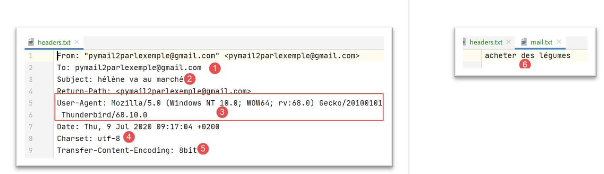
- in [5], Thunderbird [3] utilizza un [Transfer-Content-Encoding] di tipo [8bit];
- in [4]: il messaggio è codificato in UTF-8;
Il messaggio 2 è quello inviato da em Client:
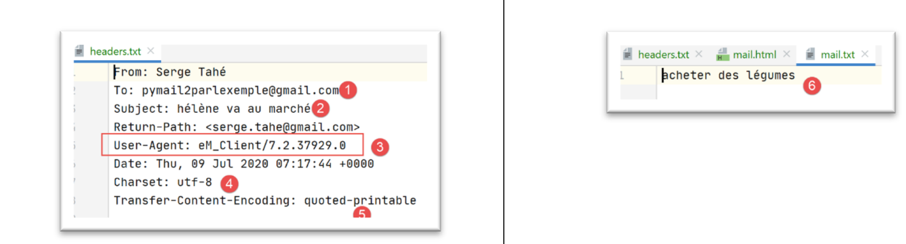

Si noti che [em Client] codifica il testo in UTF-8 [4] e lo trasferisce in [quoted-printable] [5]. Ha inoltre inviato una copia del messaggio in HTML [7-8]. Tutti i client di posta elettronica qui testati sono in grado di farlo. Si tratta di un'impostazione di configurazione.
Il messaggio 3 è quello inviato da Gmail:

Si noti che Gmail codifica il testo in UTF-8 [3] e lo trasferisce in [quoted-printable] [4]. In [6], la versione HTML del messaggio.
Il messaggio 4 è quello inviato da Outlook:

Si noti che Outlook codifica il testo in ISO-8859-1 [3] e lo trasmette in [quoted-printable] [4].
Gli esempi precedenti dimostrano due cose:
- Il nostro client [pop3/02] ha funzionato correttamente;
- I client di posta elettronica hanno modi diversi di inviare un'e-mail;
Ora diamo un'occhiata ai file allegati. Utilizzando Thunderbird, svuotiamo la casella di posta dell'utente [pymail2parlexemple@gmail.com]. Quindi utilizziamo lo script [smtp/03/main] per inviare un'e-mail con la seguente configurazione [smtp/03/config]:
- righe 31-33: alleghiamo all'e-mail:
- un file Word;
- un file PDF;
- un'e-mail contenente gli stessi due file allegati;
Una volta inviata l'e-mail, eseguiamo lo script [pop3/02] per leggere la casella di posta dell'utente [pymail2parlexemple@gmail.com]. I risultati sono i seguenti:

- in [1]: il messaggio con i suoi due file allegati;
- in [2]: l'e-mail allegata stessa con i suoi due file allegati;
Conclusione
Il modulo [mail_parser.py] è particolarmente complesso. Ciò è dovuto alla complessità delle e-mail stesse. Riutilizzeremo questo modulo per il protocollo IMAP.
21.7. Il protocollo IMAP
21.7.1. Introduzione
Per leggere le e-mail memorizzate su un server di posta, esistono due protocolli:
- il protocollo POP3 (Post Office Protocol), storicamente il primo protocollo ma oggi usato raramente;
- il protocollo IMAP (Internet Message Access Protocol), più recente del POP3 e attualmente il più diffuso;
Per approfondire il protocollo IMAP, utilizzeremo la seguente architettura:
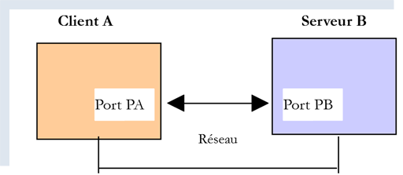
- [Server B] sarà, a seconda della situazione:
- un server IMAP locale, implementato dal server di posta [hMailServer];
- il server [imap.gmail.com:993], che è il server IMAP per il client di posta elettronica [Gmail];
- [Client A] sarà uno script Python che utilizza moduli Python per gestire gli allegati e stabilire una connessione crittografata e autenticata quando richiesto dal server IMAP;
Il protocollo IMAP va oltre il protocollo POP3:
- le email sono archiviate sul server IMAP e possono essere organizzate in cartelle;
- il client IMAP può inviare comandi per creare, modificare o eliminare queste cartelle;
Vediamo un esempio con Thunderbird. Nell'architettura seguente:

- Thunderbird è il client A;
- [imap.gmail.com] è il server B (Gmail);
Creiamo una cartella nelle email dell'utente [pymail2parlexemple@gmail.com] utilizzando Thunderbird:

- Nei passaggi [1-6], creiamo la cartella [folder1];

- nei passaggi [7-8], spostiamo (utilizzando il mouse) tutti i file dalla cartella [Posta in arrivo] alla cartella [folder1];
Ora accediamo al sito web di Gmail ed effettuiamo l'accesso come utente [pymail2parlexemple@gmail.com]:

- In [2-3], la posta in arrivo è vuota;
- in [1], la cartella [folder1] che è stata creata;

- in [4-6]: le email che sono state spostate nella cartella [folder1];
Ora stiamo esaminando la seguente architettura:

- Il client A è l'applicazione Thunderbird;
- Il client C è l'applicazione web Gmail;
- Il server B è il server IMAP di Gmail;
L'albero delle cartelle dell'utente è gestito dal server IMAP. Quindi tutti i client IMAP si sincronizzano con esso per visualizzare le cartelle dell'account dell'utente. In questo caso, Thunderbird ha inviato diversi comandi a:
- creare la cartella [folder1];
- spostare i messaggi in questa cartella;
21.7.2. script [imap/main]: client IMAP con il modulo [imaplib]

Lo script [imap/main] è configurato dal seguente script [imap/config]:
Commenti
- righe 8–29: la chiave [mailboxes] è associata all'elenco delle caselle di posta da controllare;
- riga 20: il server IMAP;
- riga 21: la sua porta di servizio;
- righe 22-23: l'utente di cui si desidera leggere le e-mail;
- riga 24: il numero massimo di email da recuperare;
- riga 25: indica se stabilire una connessione sicura con il server IMAP (True) o meno (False);
- riga 26: il timeout massimo per l'attesa di una risposta dal server;
- riga 27: cartella in cui salvare le email lette;
Lo script [imap/main] è il seguente:
Commenti
- righe 14-36: vediamo lo stesso approccio utilizzato nello script |pop3/02/main|;
La funzione [readmails] è la seguente:
Commenti
- righe 7–15: recupero delle impostazioni di configurazione;
- righe 19, 79: il codice è controllato da un blocco try/finally. Le eccezioni non vengono quindi intercettate (nessuna clausola except), quindi vengono trasmesse al codice chiamante, che le intercetta e le visualizza;
- righe 23–30: creare la cartella per il salvataggio delle e-mail;
- righe 31–35: ci connettiamo al server IMAP. La classe utilizzata varia a seconda che si tratti di un server IMAP sicuro (IMAP4_SSL) o meno (IMAP4);
- righe 36–38: Impostiamo il timeout di comunicazione client/server;
- righe 39–40: autenticazione con il server IMAP;
- righe 41-42: abbiamo visto che la casella di posta di un utente IMAP può essere organizzata in cartelle. La cartella [INBOX] è per la posta in arrivo. Per selezionare la cartella [folder1], scriveremmo [imapResource.select('folder1')];
- righe 43-45: richiediamo l'elenco di tutti i messaggi presenti nella cartella [INBOX]:
- il primo parametro di [imapResource.search] è un tipo di codifica. [None] significa "nessun filtro di codifica";
- il secondo parametro è un criterio. Esistono diversi modi per esprimerlo. Il criterio [ALL] significa che vogliamo tutti i messaggi nella cartella;
Il risultato di [imapResource.search] appare così:
typ=OK, data=[b'1 2']
[data] è una lista contenente i numeri dei messaggi recuperati. Questi sono in formato binario. Nell'esempio sopra, sono stati trovati due messaggi nella cartella [INBOX];
- Riga 49: Recuperiamo gli ID dei messaggi. A questo punto, avremo la lista [b'1' b'2'], una lista di numeri codificati in binario;
- Righe 53–78: Eseguiamo un ciclo per leggere i messaggi nella cartella [INBOX];
- righe 54-55: numero del messaggio;
- righe 58-59: il messaggio n. [num] viene richiesto al server IMAP;
- il primo parametro è il numero del messaggio desiderato;
- il secondo parametro è una stringa "(part1)(part2)…" dove [part] è il nome di una parte del messaggio. Non ho approfondito questo aspetto. Il nome (RFC822) si riferisce all'intera email;
Riceviamo qualcosa nel seguente formato:
type=OK, data=[(b'1 (RFC822 {614}', b'Return-Path: guest@localhost\r\nReceived: from [127.0.0.1] (localhost [127.0.0.1])\r\n\tby DESKTOP-528I5CU with ESMTPA\r\n\t; Tue, 17 Mar 2020 09:41:50 +0100\r\nTo: guest@localhost\r\nFrom: "guest@localhost" <guest@localhost>\r\nSubject: test\r\nMessage-ID: <2572d0f0-5b7c-2c31-5a70-c628293d5709@localhost>\r\nDate: Tue, 17 Mar 2020 09:41:48 +0100\r\nUser-Agent: Mozilla/5.0 (Windows NT 10.0; WOW64; rv:68.0) Gecko/20100101\r\n Thunderbird/68.6.0\r\nMIME-Version: 1.0\r\nContent-Type: text/plain; charset=utf-8; format=flowed\r\nContent-Transfer-Encoding: 8bit\r\nContent-Language: fr\r\n\r\nh\xc3\xa9l\xc3\xa8ne est all\xc3\xa9e au march\xc3\xa9 acheter des l\xc3\xa9gumes.\r\n\r\n'), b')']
L'elemento [data] qui è una lista con un solo elemento, e quell'unico elemento è una tupla di tre elementi:
data = [
(b'1 (RFC822 {614}',
b'Return-Path: guest@localhost\r\nReceived: from [127.0.0.1] (localhost [127.0.0.1])\r\n\tby DESKTOP-528I5CU with ESMTPA\r\n\t; Tue, 17 Mar 2020 09:41:50 +0100\r\nTo: guest@localhost\r\nFrom: "guest@localhost" <guest@localhost>\r\nSubject: test\r\nMessage-ID: <2572d0f0-5b7c-2c31-5a70-c628293d5709@localhost>\r\nDate: Tue, 17 Mar 2020 09:41:48 +0100\r\nUser-Agent: Mozilla/5.0 (Windows NT 10.0; WOW64; rv:68.0) Gecko/20100101\r\n Thunderbird/68.6.0\r\nMIME-Version: 1.0\r\nContent-Type: text/plain; charset=utf-8; format=flowed\r\nContent-Transfer-Encoding: 8bit\r\nContent-Language: fr\r\n\r\nh\xc3\xa9l\xc3\xa8ne est all\xc3\xa9e au march\xc3\xa9 acheter des l\xc3\xa9gumes.\r\n\r\n'),
b')'
]
Il secondo elemento di questa tupla è una stringa binaria che rappresenta l'intero messaggio richiesto. Possiamo riconoscere gli elementi sopra riportati già presentati durante lo studio del modulo [mail_parser].
data[0] rappresenta una tupla a due elementi. data[0][1] rappresenta le righe del messaggio in forma binaria.
- riga 68: la funzione [email.message_from_bytes(data2[0][1])] costruisce un oggetto di tipo [email.message.Message] dalle righe del messaggio. Il tipo [email.message.Message] è il tipo del parametro del modulo [mail_parser] che abbiamo scritto in precedenza;
- righe 69–73: creiamo la cartella di salvataggio per il messaggio #[num];
- riga 75: chiamiamo la funzione [save_message] dal modulo [mail_parser] alla riga 5. Questa funzione è stata descritta nella sezione |pop3/02/main|;
- righe 76–78: torniamo indietro per elaborare il messaggio successivo;
- righe 79–84: indipendentemente dal fatto che si sia verificato un errore o meno:
- riga 82: chiudiamo la connessione alla cartella interrogata;
- riga 84: ci disconnettiamo dal server IMAP;
I risultati ottenuti sono identici a quelli ottenuti con lo script [pop3/02/main]. Ciò è normale poiché viene utilizzato lo stesso parser di posta [mail_parser].